Circuitos Semiconductores Discretos
Introducción
A semiconductorUn dispositivo es uno hecho de silicio o cualquier otro material especialmente preparado diseñado para explotar las propiedades únicas de los electrones en una red cristalina, donde los electrones no tienen tanta libertad para moverse como en un conductor, pero son mucho más móviles que en un aislante. AdiscretoEl dispositivo está contenido en su propio paquete, no construido sobre un sustrato semiconductor común con otros componentes, como es el caso de los circuitos integrados, ocircuitos integrados. Por tanto, los "circuitos semiconductores discretos" son circuitos construidos a partir de componentes semiconductores individuales, conectados entre sí en algún tipo de placa de circuito o regleta de terminales. Estos circuitos emplean todos los componentes y conceptos explorados en los capítulos anteriores, por lo que es esencial tener una comprensión sólida de la electricidad de CC y CA antes de embarcarse en estos experimentos.
Sólo por diversión, se incluye un circuito en esta sección usando untubo vacíopara amplificación en lugar de un transistor semiconductor. Antes de la llegada de los transistores, los "tubos de vacío" eran los caballos de batalla de la industria electrónica: se utilizaban para fabricar rectificadores, amplificadores, osciladores y muchos otros circuitos. Aunque ahora se consideran obsoletos para la mayoría de los propósitos, todavía existen algunas aplicaciones para los tubos de vacío, y puede ser divertido construir y operar circuitos usando estos dispositivos.
Commutating diode
PIEZAS Y MATERIALES
- 6 volt battery
- Transformador de potencia, reductor de 120 VCA a 12 VCA (catálogo de Radio Shack # 273-1365, 273-1352 o 273-1511).
- Un diodo rectificador 1N4001 (catálogo de Radio Shack # 276-1101)
- Una lámpara de neón (catálogo de Radio Shack # 272-1102)
- Dos interruptores de palanca, SPST ("unipolar, unidireccional")
Se especifica un transformador de potencia, pero cualquier inductor con núcleo de hierro será suficiente, ¡incluso el inductor o transformador casero del capítulo de experimentos de CA!
No es necesario que el diodo sea exactamente el modelo 1N4001. Cualquiera de la serie de diodos rectificadores "1N400X" es adecuado para la tarea y es bastante fácil de obtener.
Recomiendo los interruptores de luz domésticos por su bajo costo y durabilidad.
REFERENCIAS CRUZADAS
Lecciones en circuitos eléctricos, Volumen 1, capítulo 16: "Constantes de tiempo RC y L/R"
Lecciones en circuitos eléctricos, Volumen 3, capítulo 3: "Diodos y Rectificadores"
OBJETIVOS DE APRENDIZAJE
- Revisar el "contragolpe" inductivo
- Aprenda a suprimir el "contragolpe" utilizando un diodo
DIAGRAMA ESQUEMÁTICO
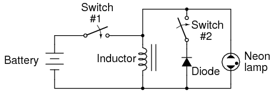
ILUSTRACIÓN
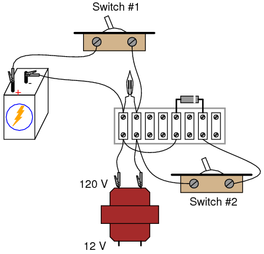
INSTRUCCIONES
Al montar el circuito, tenga mucho cuidado con la orientación del diodo. El extremo cátodo del diodo (el extremo marcado con una sola banda) debe mirar hacia el lado positivo (+) de la batería. El diodo debe tener polarización inversa y no ser conductor con el interruptor n.º 1 en la posición "encendido". Utilice el devanado de alto voltaje (120 V) del transformador para la bobina inductora. El devanado primario de un transformador reductor tiene más inductancia que el devanado secundario y dará un mayor efecto de parpadeo de la lámpara.
Coloque el interruptor n.° 2 en la posición "apagado". Esto desconecta el diodo del circuito para que no tenga ningún efecto. Cierre y abra rápidamente (encienda y luego apague) el interruptor n.° 1. Cuando se abre ese interruptor, la bombilla de neón parpadeará por el efecto del "contragolpe" inductivo. La rápida disminución de la corriente causada por la apertura del interruptor hace que el inductor cree una gran caída de voltaje mientras intenta mantener la corriente en la misma magnitud y en la misma dirección.
El contragolpe inductivo es perjudicial para los contactos del interruptor, ya que provoca un arco excesivo cada vez que se abren. En este circuito, la lámpara de neón en realidad disminuye el efecto al proporcionar una ruta de corriente alternativa para la corriente del inductor cuando se abre el interruptor, disipando la energía almacenada en el inductor de manera inofensiva en forma de luz y calor. Sin embargo, todavía hay una caída de voltaje bastante alta a través de los contactos de apertura del interruptor n.° 1, lo que provoca una formación de arco indebido y una vida útil más corta del interruptor.
Si el interruptor n.° 2 está cerrado (encendido), el diodo ahora será parte del circuito. Cierre y abra rápidamente el interruptor n.° 1 nuevamente y observe la diferencia en el comportamiento del circuito. Esta vez la lámpara de neón no parpadea. Conecte un voltímetro a través del inductor para verificar que el inductor todavía esté recibiendo el voltaje completo de la batería con el interruptor n.° 1 cerrado. Si el voltímetro registra sólo un voltaje pequeño con el interruptor n.° 1 "encendido", es probable que el diodo esté conectado al revés, creando un cortocircuito.
Half-wave rectifier
PIEZAS Y MATERIALES
- Fuente de alimentación de CA de bajo voltaje (salida de 6 voltios)
- 6 volt battery
- Un diodo rectificador 1N4001 (catálogo de Radio Shack # 276-1101)
- Motor pequeño "hobby", tipo imán permanente (catálogo de Radio Shack # 273-223 o equivalente)
- Detector de audio con auriculares.
- 0.1 µF capacitor (Radio Shack catalog # 272-135 o equivalente)
No es necesario que el diodo sea exactamente el modelo 1N4001. Cualquiera de la serie de diodos rectificadores "1N400X" es adecuado para la tarea y es bastante fácil de obtener.
Consulte el capítulo de experimentos de CA para obtener instrucciones detalladas sobre cómo construir el "detector de audio" que se enumera aquí. Si aún no ha creado uno, se está perdiendo una herramienta simple y valiosa para la experimentación.
Se especifica un condensador de 0,1 µF para "acoplar" el detector de audio al circuito, de modo que solo CA llegue al circuito del detector. El valor de este condensador no es crítico. He utilizado condensadores que van desde 0,27 µF a 0,015 µF con éxito. Los valores de condensador más bajos atenúan las señales de baja frecuencia en mayor medida, lo que resulta en una menor intensidad del sonido de los auriculares, así que use un valor de condensador de mayor valor si tiene dificultades para escuchar los tonos.
REFERENCIAS CRUZADAS
Lecciones en circuitos eléctricos, Volumen 3, capítulo 3: "Diodos y Rectificadores"
OBJETIVOS DE APRENDIZAJE
- Función de un diodo como rectificador.
- Funcionamiento del motor de imán permanente con alimentación de CA versus CC
- Medición del voltaje de "ondulación" con un voltímetro
DIAGRAMA ESQUEMÁTICO
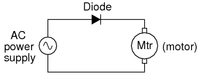
ILUSTRACIÓN
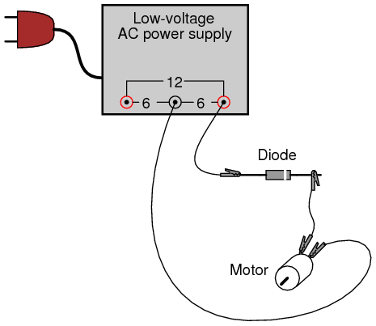
INSTRUCCIONES
Conecte el motor a la fuente de alimentación de CA de bajo voltaje a través del diodo rectificador como se muestra. El diodo solo permite que la corriente pase durante un medio ciclo de un ciclo positivo y negativo completo de voltaje de la fuente de alimentación, eliminando que un medio ciclo llegue al motor. Como resultado, el motor sólo "ve" corriente en una dirección, aunque sea unapulsantecorriente, permitiéndole girar en una dirección.
Tome un cable de puente y pase brevemente el diodo, observando el efecto en el funcionamiento del motor:
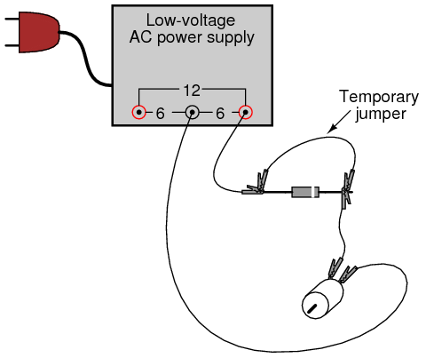
Como puede ver, los motores "CC" de imán permanente no funcionan bien con corriente alterna. Retire el cable de puente temporal e invierta la orientación del diodo en el circuito. Tenga en cuenta el efecto sobre el motor.
Mida el voltaje de CC en el motor de esta manera:
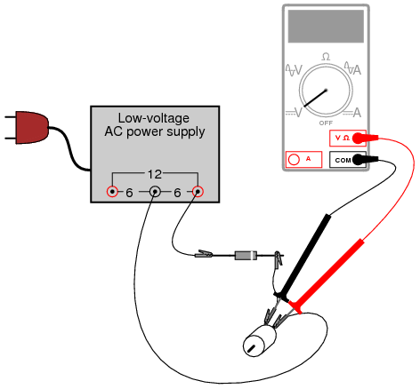
Luego, mida también el voltaje de CA en el motor:
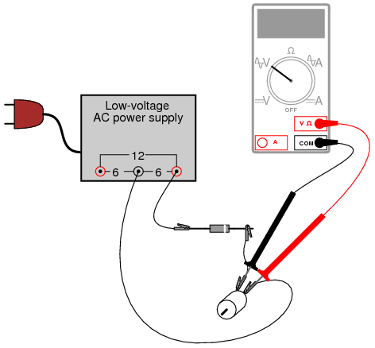
La mayoría de los multímetros digitales hacen un buen trabajo al discriminar el voltaje CA del CC, y estas dos mediciones muestran los voltajes promedio de CC y "ondulación" de CA, respectivamente, de la potencia "vista" por el motor.voltaje de ondulaciónes la porción variable del voltaje, interpretada como una cantidad de CA por el equipo de medición, aunque la forma de onda del voltaje en realidad nunca invierte la polaridad. El rizado puede imaginarse como una señal de CA superpuesta sobre una señal de CC estable de "polarización" u "offset". Compare estas mediciones de CC y CA con las mediciones de voltaje tomadas a través del motor cuando está alimentado por una batería:
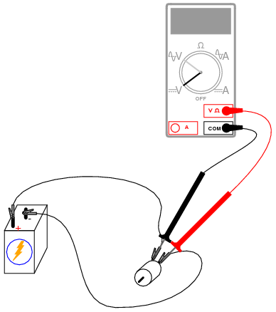
Las baterías proporcionan energía CC muy "pura" y, como resultado, debería medirse muy poco voltaje CA a través del motor en este circuito. Cualquiera que sea el voltaje de CAismedido a través del motor se debe al consumo de corriente pulsante del motor cuando las escobillas hacen y rompen contacto con las barras giratorias del conmutador. Esta corriente pulsante hace que los voltajes pulsantes caigan a través de cualquier resistencia parásita en el circuito, lo que resulta en "caídas" de voltaje pulsante en los terminales del motor.
Se puede obtener una evaluación cualitativa del voltaje de ondulación utilizando el detector de audio sensible descrito en el capítulo de experimentos de CA (el mismo dispositivo descrito como "detector de voltaje sensible" en el capítulo de experimentos de CC). Baje la sensibilidad del detector para un volumen bajo y conéctelo a través de los terminales del motor a través de un condensador pequeño (0,1 µF), como este:
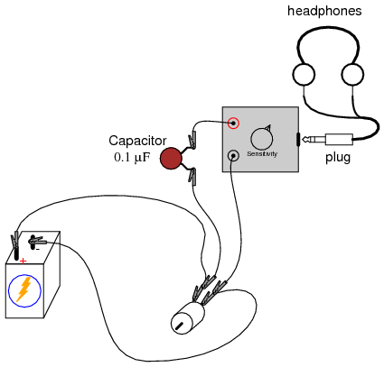
El condensador actúa como un filtro de paso alto, bloqueando el voltaje de CC para que no llegue al detector y permitiendo "escuchar" más fácilmente el voltaje de CA restante. Esta es exactamente la misma técnica utilizada en los circuitos de osciloscopio para el "acoplamiento de CA", donde un condensador conectado en serie bloquea la visualización de las señales de CC. Con una batería alimentando el motor, la onda debería sonar como un "zumbido" o "quejido" agudo. Intente reemplazar la batería con la fuente de alimentación de CA y el diodo rectificador, "escuchando" con el detector el "zumbido" grave de la energía rectificada de media onda:
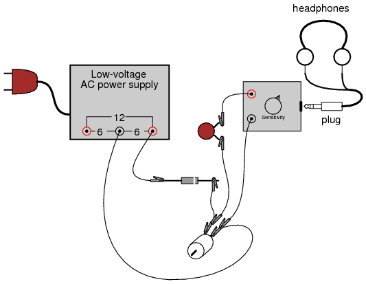
SIMULACIÓN POR COMPUTADORA
Esquema con números de nodo SPICE:
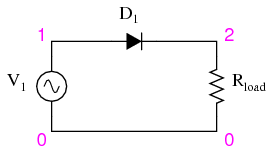
Netlist (cree un archivo de texto que contenga el siguiente texto, textualmente):
Halfwave rectifier v1 1 0 sin(0 8.485 60 0 0) rload 2 0 10k d1 1 2 mod1 .model mod1 d .tran .5m 25m .plot tran v(1,0) v(2,0) .end
Esta simulación traza el voltaje de entrada como una onda sinusoidal y el voltaje de salida como una serie de "jorobas" correspondientes a los semiciclos positivos del voltaje de la fuente de CA. Desafortunadamente, la dinámica de un motor de CC es demasiado compleja para simularla con SPICE.
El voltaje de la fuente de CA se especifica como 8.485 en lugar de 6 voltios porque SPICE entiende el voltaje de CA en términos decimavalor solamente. Un voltaje de onda sinusoidal RMS de 6 voltios tiene en realidad un pico de 8,485 voltios. En simulaciones donde la distinción entre RMS y valor pico no es relevante, no me molestaré en realizar una conversión de RMS a pico como esta. Para ser sincero, la distinción no es muy importante en esta simulación, pero la analizo aquí para su edificación.
Full-wave center-tap rectifier
PIEZAS Y MATERIALES
- Fuente de alimentación de CA de bajo voltaje (salida de 6 voltios)
- Dos diodos rectificadores 1N4001 (catálogo de Radio Shack # 276-1101)
- Motor pequeño "hobby", tipo imán permanente (catálogo de Radio Shack # 273-223 o equivalente)
- Detector de audio con auriculares.
- 0.1 µF capacitor
- Un interruptor de palanca, SPST ("unipolar, unidireccional")
Es esencial para este experimento que la fuente de alimentación de CA de bajo voltaje esté equipada con un grifo central. Un transformador con un devanado secundario sin derivación simplemente no funcionará para este circuito.
No es necesario que los diodos sean unidades exactas del modelo 1N4001. Cualquiera de la serie de diodos rectificadores "1N400X" es adecuado para la tarea y es bastante fácil de obtener.
REFERENCIAS CRUZADAS
Lecciones en circuitos eléctricos, Volumen 3, capítulo 3: "Diodos y Rectificadores"
OBJETIVOS DE APRENDIZAJE
- Diseño de un circuito rectificador de derivación central.
- Medición del voltaje de "ondulación" con un voltímetro
DIAGRAMA ESQUEMÁTICO
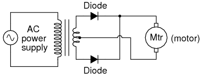
ILUSTRACIÓN
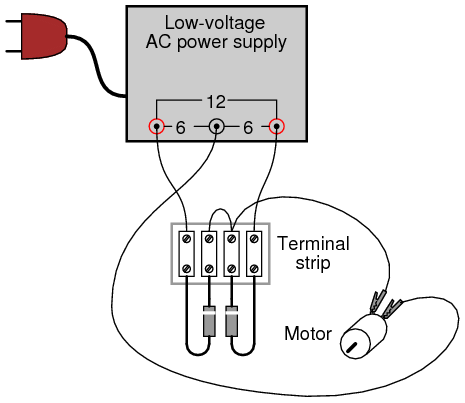
INSTRUCCIONES
Este circuito rectificador se llamaonda completaporque hace uso de toda la forma de onda, tanto los semiciclos positivos como los negativos, del voltaje de la fuente de CA para alimentar la carga de CC. Como resultado, se observa menos voltaje de "ondulación" en la carga. El valor RMS (media cuadrática) de la salida del rectificador también es mayor para este circuito que para el rectificador de media onda.
Utilice un voltímetro para medir el voltaje CC y CA entregado al motor. Debería notar las ventajas del rectificador de onda completa inmediatamente por las mayores indicaciones de CC y menores indicaciones de CA en comparación con el último experimento.
Una ventaja experimental de este circuito es la facilidad con la que se puede "desconvertir" en un rectificador de media onda: simplemente desconecte el cable de puente corto que conecta los extremos del cátodo de los dos diodos en la regleta de terminales. Mejor aún, para una comparación rápida entre la rectificación de media onda y la rectificación de onda completa, puede agregar un interruptor en el circuito para abrir y cerrar esta conexión a voluntad:
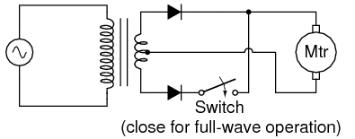
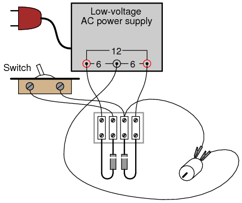
Con la capacidad de cambiar rápidamente entre rectificación de media onda y rectificación de onda completa, puede realizar fácilmente comparaciones cualitativas entre los dos modos de funcionamiento diferentes. Utilice el detector de señal de audio para "escuchar" el voltaje ondulado presente entre los terminales del motor para los modos de rectificación de media onda y onda completa, observando tanto la intensidad como la calidad del tono. Recuerde utilizar un condensador de acoplamiento en serie con el detector para que solo reciba el voltaje de "ondulación" de CA y no el voltaje de CC:
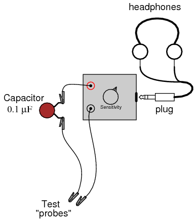
SIMULACIÓN POR COMPUTADORA
Esquema con números de nodo SPICE:
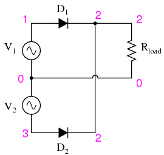
Netlist (cree un archivo de texto que contenga el siguiente texto, textualmente):
Fullwave center-tap rectifier v1 1 0 sin(0 8.485 60 0 0) v2 0 3 sin(0 8.485 60 0 0) rload 2 0 10k d1 1 2 mod1 d2 3 2 mod1 .model mod1 d .tran .5m 25m .plot tran v(1,0) v(2,0) .end
Rectificador de puente de onda completa
PIEZAS Y MATERIALES
- Fuente de alimentación de CA de bajo voltaje (salida de 6 voltios)
- Cuatro diodos rectificadores 1N4001 (catálogo de Radio Shack # 276-1101)
- Motor pequeño "hobby", tipo imán permanente (catálogo de Radio Shack # 273-223 o equivalente)
REFERENCIAS CRUZADAS
Lecciones en circuitos eléctricos, Volumen 3, capítulo 3: "Diodos y Rectificadores"
OBJETIVOS DE APRENDIZAJE
- Diseño de un circuito rectificador de puente.
- Ventajas y desventajas del circuito rectificador en puente, en comparación con el circuito de derivación central
DIAGRAMA ESQUEMÁTICO
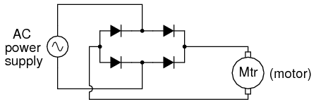
ILUSTRACIÓN
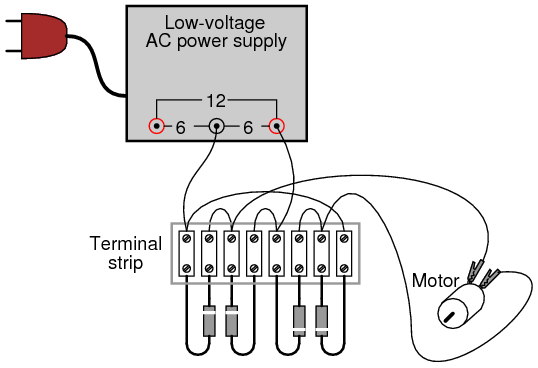
INSTRUCCIONES
Este circuito proporciona rectificación de onda completa sin la necesidad de un transformador con derivación central. En aplicaciones donde un centro roscado, ofase dividida, la fuente no está disponible, este es el único método práctico de rectificación de onda completa.
Además de requerir más diodos que el circuito de derivación central, el puente de onda completa también sufre una ligera desventaja de rendimiento: la caída de voltaje adicional causada por la corriente que tiene que pasartwodiodos en cada medio ciclo en lugar de solo uno. Con una fuente de bajo voltaje como la que estás usando (6 voltios RMS), esta desventaja se mide fácilmente. Compare la lectura de voltaje CC en los terminales del motor con la lectura obtenida en el último experimento, dada la misma fuente de alimentación CA y el mismo motor.
SIMULACIÓN POR COMPUTADORA
Esquema con números de nodo SPICE:
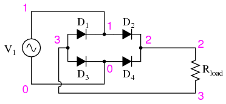
Netlist (cree un archivo de texto que contenga el siguiente texto, textualmente):
Fullwave bridge rectifier v1 1 0 sin(0 8.485 60 0 0) rload 2 3 10k d1 3 1 mod1 d2 1 2 mod1 d3 3 0 mod1 d4 0 2 mod1 .model mod1 d .tran .5m 25m .plot tran v(1,0) v(2,3) .end
Circuito rectificador/filtro
PIEZAS Y MATERIALES
- Fuente de alimentación de CA de bajo voltaje
- Paquete de puente rectificador (catálogo de Radio Shack # 276-1185 o equivalente)
- Condensador electrolítico, 1000 µF, al menos 25 WVDC (catálogo de Radio Shack # 272-1047 o equivalente)
- Cuatro postes de conexión estilo conector "banana", u otro hardware terminal, para la conexión al circuito del potenciómetro (catálogo de Radio Shack # 274-662 o equivalente)
- caja metalica
- 12-volt light bulb, 25 watt
- Portalámparas
Se recomienda encarecidamente un "paquete" de puente rectificador en lugar de construir un circuito de puente rectificador a partir de diodos individuales, porque dichos "paquetes" están hechos para atornillarse a un disipador de calor de metal. Se recomienda una caja de metal en lugar de una caja de plástico por su capacidad de funcionar como disipador de calor para el rectificador.
Está bien usar un valor de capacitor mayor en este experimento, siempre que su voltaje de trabajo sea lo suficientemente alto. Para estar seguro, elija un condensador con una tensión de trabajo nominal de al menos el doble de la salida de tensión de CA RMS de la fuente de alimentación de CA de bajo voltaje.
Las lámparas de 12 voltios de alto voltaje se pueden comprar en tiendas de suministros para vehículos recreativos (RV) y embarcaciones. Los tamaños comunes son 25 vatios y 50 vatios. Esta lámpara se utilizará como carga "pesada" para la fuente de alimentación.
REFERENCIAS CRUZADAS
Lecciones en circuitos eléctricos, Volumen 2, capítulo 8: "Filtros"
OBJETIVOS DE APRENDIZAJE
- Función de filtro capacitivo en una fuente de alimentación AC/DC
- Importancia de los disipadores de calor para los semiconductores de potencia.
DIAGRAMA ESQUEMÁTICO
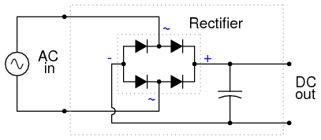
ILUSTRACIÓN
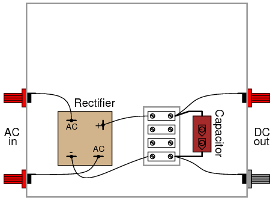
INSTRUCCIONES
Este experimento implica construir un circuito rectificador y filtro para conectarlo a la fuente de alimentación de CA de bajo voltaje construida anteriormente. Con este dispositivo, tendrá una fuente de alimentación CC de bajo voltaje adecuada como reemplazo de una batería en experimentos con baterías. Si desea que este dispositivo tenga su propia fuente de alimentación autónoma de 120 VCA/CC, puede agregar todos los componentes de la fuente de alimentación de CA de bajo voltaje al lado de "entrada de CA" de este circuito: un transformador, un cable de alimentación y un enchufe. Incluso si no decide hacer esto, le recomiendo utilizar una caja de metal más grande de lo necesario para dejar espacio para circuitos de regulación de voltaje adicionales que podría optar por agregar a este proyecto más adelante.
La unidad del puente rectificador debe estar clasificada para una corriente al menos tan alta como la del devanado secundario del transformador y para un voltaje al menos dos veces más alto que el voltaje RMS de salida del transformador (esto permite un voltaje máximo, más un margen de seguridad adicional). El rectificador Radio Shack especificado en la lista de piezas tiene una potencia nominal de 25 amperios y 50 voltios, más que suficiente para la salida de la fuente de alimentación de CA de bajo voltaje especificada en el capítulo de experimentos de CA.
Las unidades rectificadoras de este tamaño suelen estar equipadas con terminales de "desconexión rápida". Se venden terminales complementarios de "desconexión rápida" que se engarzan en los extremos desnudos del cable. Este es el método preferido de conexión de terminales. Puede soldar cables directamente a las terminales del rectificador, pero no recomiendo soldar directamente a ningún componente semiconductor por dos razones: posible daño por calor durante la soldadura y dificultad para reemplazar el componente en caso de falla.
Los dispositivos semiconductores son más propensos a fallar que la mayoría de los componentes cubiertos en estos experimentos hasta ahora, por lo que si tiene la intención de hacer un circuito permanente, debe construirlo para que se le dé mantenimiento. La "construcción sostenible" implica, entre otras cosas, que todos los componentes delicados sean reemplazables. También significa hacer que los "puntos de prueba" sean accesibles para las sondas del medidor en todo el circuito, de modo que la resolución de problemas se pueda ejecutar con un mínimo de inconvenientes. Las regletas de terminales proporcionan inherentemente puntos de prueba para tomar mediciones de voltaje y también permiten una fácil desconexión de cables sin sacrificar la durabilidad de la conexión.
Atornille la unidad rectificadora al interior de la caja de metal. La superficie de la caja actuará como un radiador, manteniendo fría la unidad rectificadora a medida que pasa altas corrientes. Cualquier superficie de radiador metálica diseñada para reducir la temperatura de funcionamiento de un componente electrónico se denominadisipador de calor. Los dispositivos semiconductores en general son propensos a sufrir daños por sobrecalentamiento, por lo que proporcionar una ruta para la transferencia de calor desde los dispositivos al aire ambiente es muy importante cuando el circuito en cuestión puede manejar grandes cantidades de energía.
Se incluye un capacitor en el circuito para actuar comofiltrarpara reducir el voltaje de ondulación. Asegúrese de conectar el condensador correctamente entre los terminales de salida de CC del rectificador, de modo que las polaridades coincidan. Al ser un condensador electrolítico, es sensible a sufrir daños por inversión de polaridad. Especialmente en este circuito, donde la resistencia interna del transformador y el rectificador es baja y, en consecuencia, la corriente de cortocircuito es alta, el potencial de daño es grande.Advertencia:¡Un condensador defectuoso en este circuito probablemente explotará con una fuerza alarmante!
Una vez construido el circuito rectificador/filtro, conéctelo a la fuente de alimentación de CA de bajo voltaje de esta manera:
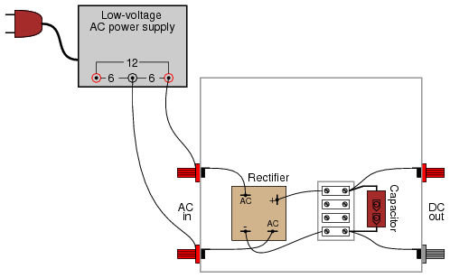
Mida la salida de voltaje CA de la fuente de alimentación de bajo voltaje. Su medidor debe indicar aproximadamente 6 voltios si el circuito está conectado como se muestra. Esta medida de voltaje es el voltaje RMS de la fuente de alimentación de CA.
Ahora, cambie su multímetro a la función de voltaje CC y mida la salida de voltaje CC del circuito rectificador/filtro. Debería leerse sustancialmente más alto que el voltaje RMS de la entrada de CA medido anteriormente. La acción de filtrado del condensador proporciona un voltaje de salida de CC igual alcimaVoltaje CA, de ahí la mayor indicación de voltaje:
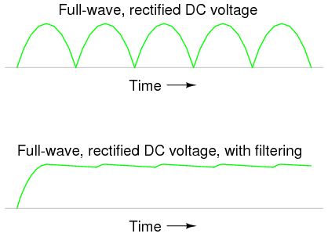
Mida la magnitud del voltaje de ondulación de CA con un voltímetro digital configurado en voltios de CA (o milivoltios de CA). Debería notar un voltaje de ondulación mucho menor en este circuito que el medido en cualquiera de los circuitos rectificadores sin filtro construidos anteriormente. Siéntase libre de utilizar su detector de audio para "escuchar" la salida de voltaje de ondulación de CA de la unidad rectificadora/filtro. Como de costumbre, conecte un pequeño condensador de "acoplamiento" en serie con el detector para que no responda al voltaje de CC, sino sólo a la ondulación de CA. Se debe escuchar muy poco sonido.
Después de tomar mediciones del voltaje de ondulación de CA sin carga, conecte la bombilla de 25 vatios a la salida del circuito rectificador/filtro de esta manera:
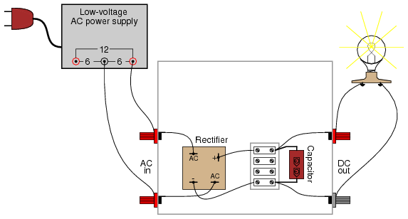
Vuelva a medir el voltaje de ondulación presente entre los terminales de "salida de CC" de la unidad rectificadora/filtro. Con una carga pesada, el condensador del filtro se descarga entre los picos de voltaje rectificados, lo que produce una ondulación mayor que antes:
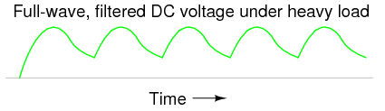
Si se desea una menor ondulación en condiciones de carga pesada, se puede usar un capacitor más grande o se puede construir un circuito de filtro más complejo usando dos capacitores y un inductor:
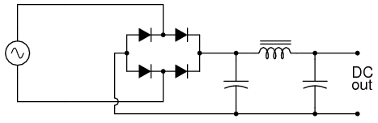
Si decide construir un circuito de filtro de este tipo, asegúrese de utilizar un inductor con núcleo de hierro para obtener la máxima inductancia y uno con un cable lo suficientemente grueso como para manejar de forma segura toda la corriente nominal de la fuente de alimentación. Los inductores utilizados con fines de filtrado a veces se denominanahoga, porque "impiden" que el voltaje de ondulación de CA llegue a la carga. Si no se puede obtener un inductor adecuado, se puede utilizar el devanado secundario de un transformador de potencia reductor como el que se utiliza para reducir 120 voltios de CA a 12 o 6 voltios de CA en la fuente de alimentación de bajo voltaje. Deje abierto el devanado primario (120 voltios):
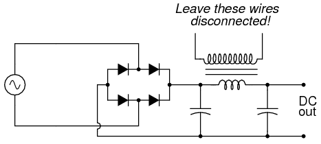
SIMULACIÓN POR COMPUTADORA
Esquema con números de nodo SPICE:
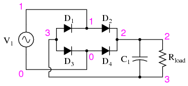
Netlist (cree un archivo de texto que contenga el siguiente texto, textualmente):
Fullwave bridge rectifier v1 1 0 sin(0 8.485 60 0 0) rload 2 3 10k c1 2 3 1000u ic=0 d1 3 1 mod1 d2 1 2 mod1 d3 3 0 mod1 d4 0 2 mod1 .model mod1 d .tran .5m 25m .plot tran v(1,0) v(2,3) .end
Puedes disminuir el valor de R.cargaen la simulación desde 10 kΩ hasta algún valor más bajo para explorar los efectos de la carga sobre el voltaje de ondulación. Como ocurre con una resistencia de carga de 10 kΩ, la ondulación es indetectable en la forma de onda trazada por SPICE.
Regulador de tensión
PIEZAS Y MATERIALES
- Cuatro baterías de 6 voltios
- Diodo Zener, 12 voltios, tipo 1N4742 (catálogo de Radio Shack n.º 276-563 o equivalente)
- Una resistencia de 10 kΩ
Cualquier diodo zener de bajo voltaje es apropiado para este experimento. El modelo 1N4742 que se enumera aquí (voltaje zener = 12 voltios) es solo una sugerencia. Cualquiera que sea el modelo de diodo que elija, le recomiendo uno con tensión nominal zener.mayor queque el voltaje de una sola batería, para una máxima experiencia de aprendizaje. Es importante que veas cómo funciona un diodo zener cuando se expone a un voltaje.menos quesu calificación de avería.
REFERENCIAS CRUZADAS
Lecciones en circuitos eléctricos, Volumen 3, capítulo 3: "Diodos y Rectificadores"
OBJETIVOS DE APRENDIZAJE
- Función del diodo Zener
DIAGRAMA ESQUEMÁTICO
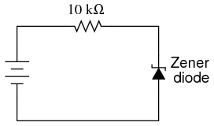
ILUSTRACIÓN
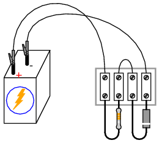
INSTRUCCIONES
Construya este circuito simple, asegurándose de conectar el diodo en forma de "polarización inversa" (cátodo positivo y ánodo negativo) y mida el voltaje a través del diodo con una batería como fuente de energía. Registre esta caída de voltaje para referencia futura. Además, mida y registre la caída de voltaje en la resistencia de 10 kΩ.
Modifique el circuito conectando dos baterías de 6 voltios en serie, para un voltaje total de fuente de alimentación de 12 voltios. Vuelva a medir la caída de tensión del diodo, así como la caída de tensión de la resistencia, con un voltímetro:
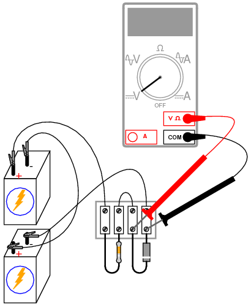
Conecte tres, luego cuatro baterías de 6 voltios en serie, formando una fuente de alimentación de 18 voltios y 24 voltios, respectivamente. Mida y registre las caídas de voltaje del diodo y la resistencia para cada nuevo voltaje de la fuente de alimentación. ¿Qué observa acerca de la caída de voltaje del diodo para estos cuatro voltajes de fuente diferentes? ¿Ves cómo el voltaje del diodo nunca supera un nivel de 12 voltios? ¿Qué observa acerca de la caída de voltaje de la resistencia para estos cuatro niveles de voltaje de fuente diferentes?
Los diodos Zener se utilizan frecuentemente como voltaje.regulardispositivos, porque actúan para limitar la caída de voltaje sobre sí mismos a un nivel predeterminado. Cualquier exceso de voltaje suministrado por la fuente de energía cae a través de la resistencia en serie. Sin embargo, es importante tener en cuenta que un diodo zener no puedeconstituirpor una deficiencia en el voltaje de la fuente. Por ejemplo, este diodo zener de 12 voltios no baja 12 voltios cuando la fuente de alimentación tiene solo 6 voltios. Es útil pensar en un diodo zener como un voltajelimitador: estableciendo una caída de tensión máxima, pero no una caída de tensión mínima.
SIMULACIÓN POR COMPUTADORA
Esquema con números de nodo SPICE:
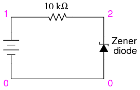
Netlist (cree un archivo de texto que contenga el siguiente texto, textualmente):
Zener diode v1 1 0 r1 1 2 10k d1 0 2 mod1 .model mod1 d bv=12 .dc v1 18 18 1 .print dc v(2,0) .end
Se puede simular un diodo zener en SPICE con un diodo normal, el parámetro de ruptura inversa (bv=12) ajustado al voltaje de ruptura zener deseado.
Transistor as a switch
PIEZAS Y MATERIALES
- Dos baterías de 6 voltios
- Un transistor NPN: se recomiendan los modelos 2N2222 o 2N3403 (el catálogo de Radio Shack # 276-1617 es un paquete de quince transistores NPN ideal para este y otros experimentos)
- Una resistencia de 100 kΩ
- Una resistencia de 560 Ω
- Un diodo emisor de luz (catálogo de Radio Shack # 276-026 o equivalente)
Los valores de resistencia no son críticos para este experimento. Tampoco se selecciona el diodo emisor de luz (LED) en particular.
REFERENCIAS CRUZADAS
Lecciones en circuitos eléctricos, Volumen 3, capítulo 4: "Transistores de unión bipolares"
OBJETIVOS DE APRENDIZAJE
- Amplificación de corriente de un transistor de unión bipolar.
DIAGRAMA ESQUEMÁTICO
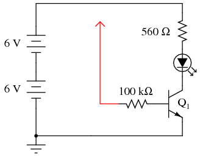
ILUSTRACIÓN
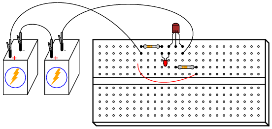
INSTRUCCIONES
El cable rojo que se muestra en el diagrama (el que termina en una punta de flecha, conectado a un extremo de la resistencia de 100 kΩ) está diseñado para permanecer suelto, de modo que puedas tocar con él momentáneamente otros puntos del circuito.
Si toca el extremo del cable suelto en cualquier punto del circuito más positivo que él, como el lado positivo de la fuente de alimentación de CC, el LED debería encenderse. Se necesitan 20 mA para iluminar completamente un LED estándar, por lo que este comportamiento debería parecerle interesante, porque la resistencia de 100 kΩ a la que está conectado el cable suelto restringe la corriente a través de él a un valor mucho menor que 20 mA. Como máximo, un voltaje total de 12 voltios a través de una resistencia de 100 kΩ produce una corriente de sólo 0,12 mA, o 120 µA. La conexión realizada al tocar el cable en un punto positivo del circuito conduce mucha menos corriente que 1 mA, pero a través de la acción amplificadora del transistor, es capaz decontroluna corriente mucho mayor a través del LED.
Intente usar un amperímetro para conectar el cable suelto al lado positivo de la fuente de alimentación, así:
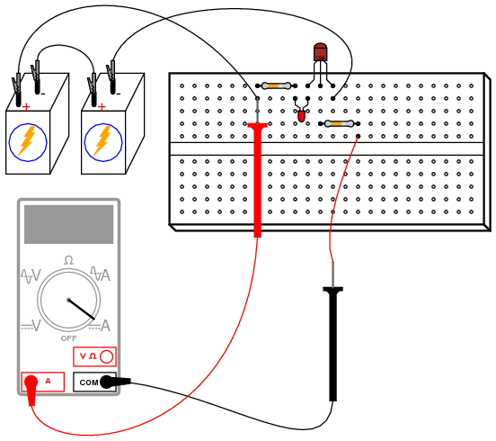
Es posible que deba seleccionar el rango de corriente más sensible en el medidor para medir este pequeño flujo. Después de medir estocontroladorcorriente, intente medir la corriente del LED (larevisadocorriente) y comparar magnitudes. ¡No se sorprenda si encuentra una relación superior a 200 (la corriente controlada 200 veces mayor que la corriente de control)!
Como puede ver, el transistor actúa como una especie de interruptor controlado eléctricamente, activando y desactivando la corriente al LED a la orden de una señal de corriente mucho más pequeña conducida a través de su terminal base.
Para ilustrar mejor cuán minúscula es la corriente de control, retire el cable suelto del circuito e intente "unir" el extremo desconectado de la resistencia de 100 kΩ al polo positivo de la fuente de alimentación con dos dedos de una mano. Es posible que necesites mojar las puntas de esos dedos para maximizar la conductividad:
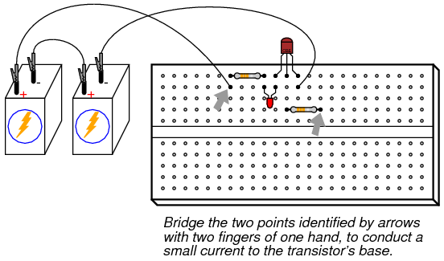
Intente variar la presión de contacto de sus dedos con estos dos puntos del circuito para variar la cantidad de resistencia en el camino de la corriente de control. ¿Puedes variar el brillo del LED al hacerlo? ¿Qué indica esto acerca de la capacidad del transistor para actuar como algo más que un simple interruptor? es decir, como unvariable
SIMULACIÓN POR COMPUTADORA
Esquema con números de nodo SPICE:
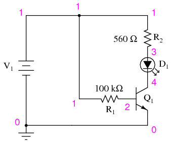
Netlist (cree un archivo de texto que contenga el siguiente texto, textualmente):
Transistor as a switch v1 1 0 r1 1 2 100k r2 1 3 560 d1 3 4 mod2 q1 4 2 0 mod1 .model mod1 npn bf=200 .model mod2 d is=1e-28 .dc v1 12 12 1 .print dc v(2,0) v(4,0) v(1,2) v(1,3) v(3,4) .end
En esta simulación, la caída de voltaje a través de la resistencia de 560 Ωv(1,3)Resulta ser 10,26 voltios, lo que indica una corriente LED de 18,32 mA según la ley de Ohm (I=E/R). R1La caída de voltaje (voltaje entre los nodos 1 y 2) termina siendo de 11,15 voltios, lo que en 100 kΩ da una corriente de solo 111,5 µA. Obviamente, una corriente muy pequeña ejerce control sobre una corriente mucho mayor en este circuito.
En caso de que te lo preguntes, elis=1e-28parámetro en el diodo.modeloLa línea está ahí para hacer que el diodo actúe más como un LED con una mayor caída de voltaje directo.
Static electricity sensor
PIEZAS Y MATERIALES
- Un transistor de efecto de campo de unión de canal N, se recomiendan los modelos 2N3819 o J309 (el catálogo de Radio Shack # 276-2035 es el modelo 2N3819)
- Una batería de 6 voltios
- Una resistencia de 100 kΩ
- Un diodo emisor de luz (catálogo de Radio Shack # 276-026 o equivalente)
- Peine de plastico
El modelo particular de transistor de efecto de campo de unión, o JFET, utilizado en este experimento no es crítico. Los JFET de canal P también se pueden usar, pero no son tan populares como los transistores de canal N.
Tenga en cuenta que no todos los transistores comparten las mismas designaciones de terminales, oconfiguración de pines, incluso si comparten la misma apariencia física. Esto determinará cómo conectar los transistores entre sí y a otros componentes, así que asegúrese de verificar las especificaciones del fabricante (hoja de datos de los componentes), que se puede obtener fácilmente en el sitio web del fabricante. ¡Tenga en cuenta que es posible que el paquete del transistor e incluso la hoja de datos del fabricante muestren diagramas de identificación de terminales incorrectos! Se recomienda encarecidamente verificar las identidades de los pines con la función de "verificación de diodos" de su multímetro. Para obtener detalles sobre cómo identificar terminales de transistores de efecto de campo de unión usando un multímetro, consulte el capítulo 5 del volumen Semiconductores (volumen III) de esta serie de libros.
REFERENCIAS CRUZADAS
Lecciones en circuitos eléctricos, Volumen 3, capítulo 5: "Transistores de efecto de campo de unión"
OBJETIVOS DE APRENDIZAJE
- Cómo se utiliza el JFET como interruptor de encendido/apagado
- En qué se diferencia la ganancia de corriente JFET de un transistor bipolar
DIAGRAMA ESQUEMÁTICO
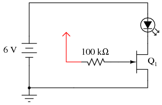
ILUSTRACIÓN
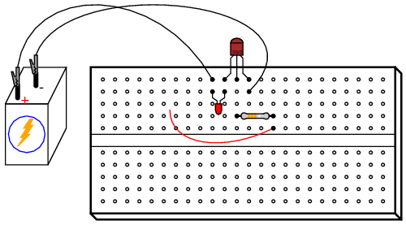
INSTRUCCIONES
Este experimento es muy similar al experimento anterior que utiliza un transistor de unión bipolar (BJT) como dispositivo de conmutación para controlar la corriente a través de un LED. En este experimento, untransistor de efecto de campo de uniónse utiliza en su lugar, lo que proporciona una sensibilidad dramáticamente mejorada.
Construya este circuito y toque el extremo del cable suelto (el cable que se muestra en rojo en el diagrama esquemático y en la ilustración, conectado a la resistencia de 100 kΩ) con la mano. Simplemente tocar este cable probablemente tendrá un efecto en el estado del LED. ¡Este circuito es un fino sensor de electricidad estática! Intente frotar sus pies sobre una alfombra y luego toque el extremo del cable si aún no ve ningún efecto en la luz.
Para una prueba más controlada, toque el cable con una mano y toque alternativamente los terminales positivo (+) y negativo (-) de la batería con un dedo de la otra mano. Su cuerpo actúa como conductor (aunque sea deficiente), conectando el terminal de puerta del JFET a cualquiera de los terminales de la batería cuando los toca. Tome nota de qué terminal enciende el LED y cuál hace que se apague. Intente relacionar este comportamiento con lo que leyó sobre los JFET en el capítulo 5 del volumen Semiconductor.
El hecho de que un JFET se encienda y apague tan fácilmente (requiriendo tan poca corriente de control), como lo demuestra el control total de encendido y apagado simplemente mediante la conducción de una corriente de control a través de su cuerpo, demuestra cuán grande es la ganancia de corriente que tiene. Con el experimento del "interruptor" BJT, se necesitaba una conexión mucho más "sólida" entre el terminal de puerta del transistor y una fuente de voltaje para encenderlo. No es así con el JFET. De hecho, la mera presencia de electricidad estática puede encenderlo y apagarlo a distancia.
Para experimentar más con los efectos de la electricidad estática en este circuito, cepilla tu cabello con el peine de plástico y luego agita el peine cerca del transistor, observando el efecto en el LED. La acción de peinarte el cabello con un objeto de plástico crea un alto voltaje estático entre el peine y tu cuerpo. ¡El fuerte campo eléctrico producido entre estos dos objetos debería ser detectable por este circuito desde una distancia considerable!
En caso de que se pregunte por qué no hay una resistencia de "caída" de 560 Ω para limitar la corriente a través del LED, muchos JFET de señal pequeña tienden a autolimitar su corriente controlada a un nivel aceptable para los LED. El modelo 2N3819, por ejemplo, tiene una corriente de drenaje saturada típica (IDSS) de 10 mA y un máximo de 20 mA. Dado que la mayoría de los LED tienen una corriente directa de 20 mA, no hay necesidad de una resistencia de caída para limitar la corriente del circuito: el JFET lo hace intrínsecamente.
Pulsed-light sensor
PIEZAS Y MATERIALES
- Dos baterías de 6 voltios
- Un transistor NPN: se recomiendan los modelos 2N2222 o 2N3403 (el catálogo de Radio Shack # 276-1617 es un paquete de quince transistores NPN ideal para este y otros experimentos)
- Un diodo emisor de luz (catálogo de Radio Shack # 276-026 o equivalente)
- Detector de audio con auriculares.
Si aún no tiene un detector de audio construido, puede usar un buen par de auriculares de audio (estilo de copa cerrada, que cubra completamente sus oídos) y un transformador reductor de 120 V/6 V para construir un detector de audio sensible sin control de volumen ni protección contra sobretensión, solo para este experimento.
Conecte estas partes del enchufe estéreo de los auriculares al devanado secundario (6 voltios) del transformador:

Pruebe los esquemas de conexión en serie y en paralelo para obtener el sonido más fuerte.
Si no ha fabricado un detector de audio como se describe en los capítulos de experimentos de CC y CA, realmente debería hacerlo: es un equipo de prueba valioso para su colección.
REFERENCIAS CRUZADAS
Lecciones en circuitos eléctricos, Volumen 3, capítulo 4: "Transistores de unión bipolares"
OBJETIVOS DE APRENDIZAJE
- Cómo utilizar un transistor como un tosco amplificador de emisor común
- Cómo utilizar un LED como sensor de luz
DIAGRAMA ESQUEMÁTICO
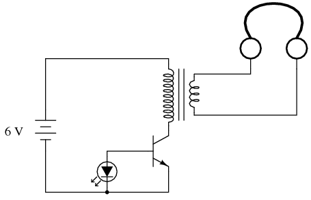
ILUSTRACIÓN
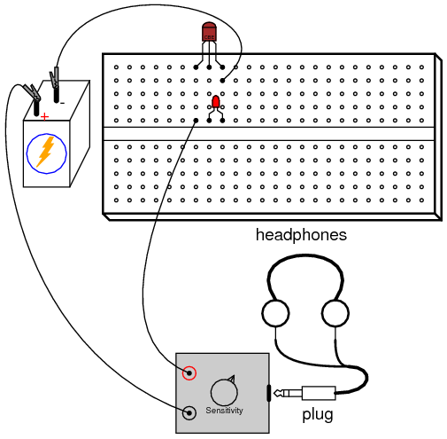
INSTRUCCIONES
Este circuito detecta pulsos de luz que inciden en el LED y los convierte en señales de audio relativamente fuertes que se escuchan a través de los auriculares. Forrest Mims enseña que los LED tienen la capacidad deproducircorriente cuando se expone a la luz, de una manera similar a una célula solar semiconductora.[MIM]Por sí solo, el LED no produce suficiente energía eléctrica para accionar el circuito detector de audio, por lo que se utiliza un transistor para amplificar las señales del LED. Si el LED se expone a una fuente de luz pulsante, se escuchará un tono en los auriculares.
Las fuentes de luz adecuadas para este experimento incluyen lámparas fluorescentes y de neón, que parpadean rápidamente cuando las energiza la corriente alterna de 60 Hz. También puedes intentar usar luz solar brillante como fuente de luz constante y luego agitar los dedos frente al LED. Las sombras que pasan rápidamente harán que el LED genere pulsos de voltaje, creando un breve "zumbido" en los auriculares.
Los LED que sirven como fotodetectores son dispositivos de banda estrecha que responden a una banda estrecha de longitudes de onda cercanas, pero no idénticas, a la que se emite normalmente. Los controles remotos por infrarrojos son una buena fuente de iluminación para los LED del infrarrojo cercano empleados como fotosensores, que producen un sonido receptor.[MIM3]
Con un poco de imaginación, no es difícil comprender el concepto de transmitir información de audio (como música o voz) a través de un haz de luz pulsante. Dado un circuito "transmisor" adecuado para encender y apagar un LED con las crestas positivas y negativas de una forma de onda de audio de un micrófono, el circuito "receptor" que se muestra aquí convertiría esos pulsos de luz nuevamente en señales de audio.[MIM2]
Seguidor de tensión
PIEZAS Y MATERIALES
- Un transistor NPN: se recomiendan los modelos 2N2222 o 2N3403 (el catálogo de Radio Shack # 276-1617 es un paquete de quince transistores NPN ideal para este y otros experimentos)
- Dos baterías de 6 voltios
- Dos resistencias de 1 kΩ
- Un potenciómetro de 10 kΩ, de una sola vuelta, de conicidad lineal (catálogo de Radio Shack # 271-1715)
Tenga en cuenta que no todos los transistores comparten las mismas designaciones de terminales, oconfiguración de pines, incluso si comparten la misma apariencia física. Esto determinará cómo conectar los transistores entre sí y a otros componentes, así que asegúrese de verificar las especificaciones del fabricante (hoja de datos de los componentes), que se puede obtener fácilmente en el sitio web del fabricante. ¡Tenga en cuenta que es posible que el paquete del transistor e incluso la hoja de datos del fabricante muestren diagramas de identificación de terminales incorrectos! Se recomienda encarecidamente verificar las identidades de los pines con la función de "verificación de diodos" de su multímetro. Para obtener detalles sobre cómo identificar terminales de transistores bipolares usando un multímetro, consulte el capítulo 4 del volumen Semiconductores (volumen III) de esta serie de libros.
REFERENCIAS CRUZADAS
Lecciones en circuitos eléctricos, Volumen 3, capítulo 4: "Transistores de unión bipolares"
OBJETIVOS DE APRENDIZAJE
- Propósito del circuito "tierra" cuando no hay una conexión real a tierra
- Usar una resistencia en derivación para medir corriente con un voltímetro
- Medir la ganancia de voltaje del amplificador
- Medir la ganancia de corriente del amplificador
- Transformación de impedancia del amplificador
DIAGRAMA ESQUEMÁTICO
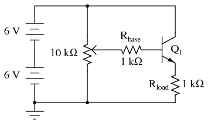
ILUSTRACIÓN
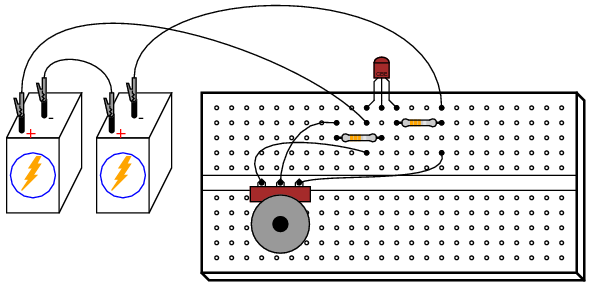
INSTRUCCIONES
Nuevamente, tenga en cuenta que el transistor que seleccione para este experimento puede no tener las mismas designaciones de terminales que se muestran aquí y, por lo tanto, el diseño de la placa que se muestra en la ilustración puede no ser correcto para usted. En mis ilustraciones, muestro todos los transistores del paquete TO-92 con terminales etiquetados como "CBE": colector, base y emisor, de izquierda a derecha. Esto es correcto para el transistor modelo 2N2222 y algunos otros,pero no para todos; ¡Ni siquiera para todos los transistores tipo NPN! Como de costumbre, consulte con el fabricante para obtener detalles sobre los componentes particulares que elija para un proyecto. Con los transistores de unión bipolar, es bastante fácil verificar las asignaciones de terminales con un multímetro.
The seguidor de voltajees el circuito amplificador de transistores más seguro y fácil de construir. Su propósito es proporcionar aproximadamente el mismo voltaje a una carga que el que ingresa al amplificador, pero a una corriente mucho mayor. En otras palabras, no tiene ganancia de voltaje, pero sí ganancia de corriente.
Tenga en cuenta que el lado negativo (-) de la fuente de alimentación se muestra en el diagrama esquemático para conectarse asuelo, como lo indica el símbolo en la esquina inferior izquierda del diagrama. Esto no representa necesariamente una conexión con la tierra real. Lo que significa es que este punto del circuito (y todos los puntos eléctricamente comunes a él) constituyen el punto de referencia predeterminado para todas las mediciones de voltaje en el circuito. Dado que el voltaje es necesariamente una cantidad relativa entre dos puntos, un punto de referencia "común" designado en un circuito nos da la capacidad de hablar significativamente del voltaje en puntos particulares y únicos de ese circuito.
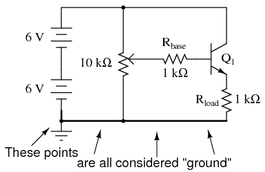
Por ejemplo, si tuviera que hablar de voltajeatla base del transistor (VB), me referiría al voltaje medido entre el terminal base del transistor y el lado negativo de la fuente de alimentación (tierra), con la sonda roja tocando el terminal base y la sonda negra tocando tierra. Normalmente no tiene sentido hablar de tensión.atun solo punto, pero tener un punto de referencia implícito para las mediciones de voltaje hace que tales afirmaciones tengan sentido:
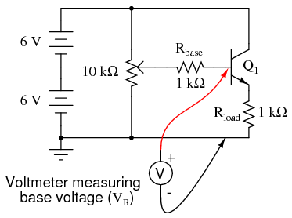
Construya este circuito y mida el voltaje de salida versus el voltaje de entrada para varias configuraciones de potenciómetro diferentes. El voltaje de entrada es el voltaje en el limpiador del potenciómetro (voltaje entre el limpiador y la tierra del circuito), mientras que el voltaje de salida es el voltaje de la resistencia de carga (voltaje a través de la resistencia de carga o voltaje del emisor: entre el emisor y la tierra del circuito). Debería ver una estrecha correlación entre estos dos voltajes: uno es un poco mayor que el otro (¿aproximadamente 0,6 voltios más o menos?), pero un cambio en el voltaje de entrada produce un cambio casi igual en el voltaje de salida. Porque la relación entre la entradacambiary salidacambiares casi 1:1, decimos que la ganancia de voltaje CA de este amplificador es casi 1.
No es muy impresionante, ¿verdad? Ahora mida la corriente a través de la base del transistor (corriente de entrada) versus la corriente a través de la resistencia de carga (corriente de salida). Antes de romper el circuito e insertar su amperímetro para tomar estas medidas, considere un método alternativo: medirVoltajea través de las resistencias de base y de carga, cuyos valores de resistencia son conocidos. Usando la Ley de Ohm, la corriente a través de cada resistencia se puede calcular fácilmente: divida el voltaje medido por la resistencia conocida (I=E/R). Este cálculo es particularmente fácil con resistencias de valor 1 kΩ: habrá 1 miliamperio de corriente por cada voltio de caída a través de ellas. Para obtener una mayor precisión, puedes medir la resistencia de cada resistor en lugar de asumir un valor exacto de 1 kΩ, pero en realidad no importa mucho para los propósitos de este experimento. Cuando se utilizan resistencias para tomar medidas de corriente "traduciendo" una corriente en un voltaje correspondiente, a menudo se las denominaderivaciónresistencias.
Debería esperar encontrar grandes diferencias entre las corrientes de entrada y salida para este circuito amplificador. De hecho, no es raro experimentar ganancias de corriente muy superiores a 200 para un transistor de pequeña señal que funciona a niveles de corriente bajos. Este es el propósito principal de un circuito seguidor de voltaje: aumentar la capacidad de corriente de una señal "débil" sin alterar su voltaje.
Otra forma de pensar en la función de este circuito es en términos deimpedancia. El lado de entrada de este amplificador acepta una señal de voltaje sin consumir mucha corriente. El lado de salida de este amplificador entrega el mismo voltaje, pero a una corriente limitada sólo por la resistencia de la carga y la capacidad de manejo de corriente del transistor. En términos de impedancia, podríamos decir que este amplificador tiene una impedancia de entrada alta (caída de voltaje con muy poca corriente consumida) y una impedancia de salida baja (caída de voltaje con una capacidad de suministro de corriente casi ilimitada).
SIMULACIÓN POR COMPUTADORA
Esquema con números de nodo SPICE:
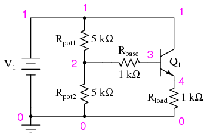
Netlist (cree un archivo de texto que contenga el siguiente texto, textualmente):
Voltage follower v1 1 0 rpot1 1 2 5k rpot2 2 0 5k rbase 2 3 1k rload 4 0 1k q1 1 3 4 mod1 .model mod1 npn bf=200 .dc v1 12 12 1 .print dc v(2,0) v(4,0) v(2,3) .end
Cuando esta simulación se ejecuta a través del programa SPICE, muestra un voltaje de entrada de 5,937 voltios y un voltaje de salida de 5,095 voltios, con una corriente de entrada de 25,35 µA (2,535E-02 voltios caídos a través del cable R de 1 kΩ).baseresistor). La corriente de salida es, por supuesto, 5,095 mA, inferida del voltaje de salida de 5,095 voltios caídos a través de una resistencia de carga de exactamente 1 kΩ. Puede cambiar la configuración del "potenciómetro" en este circuito ajustando los valores de Rolla1y rolla2, manteniendo siempre su suma en 10 kΩ.
Common-emitter amplifier
PIEZAS Y MATERIALES
- Un transistor NPN: se recomienda el modelo 2N2222 o 2N3403 (el catálogo de Radio Shack # 276-1617 es un paquete de quince transistores NPN ideal para este y otros experimentos)
- Dos baterías de 6 voltios
- Un potenciómetro de 10 kΩ, de una sola vuelta, de conicidad lineal (catálogo de Radio Shack # 271-1715)
- Una resistencia de 1 MΩ
- Una resistencia de 100 kΩ
- Una resistencia de 10 kΩ
- Una resistencia de 1,5 kΩ
REFERENCIAS CRUZADAS
Lecciones en circuitos eléctricos, Volumen 3, capítulo 4: "Transistores de unión bipolares"
OBJETIVOS DE APRENDIZAJE
- Diseño de un circuito amplificador de emisor común simple.
- Cómo medir la ganancia de voltaje del amplificador
- La diferencia entre un amplificador inversor y uno no inversor.
- Formas de introducir retroalimentación negativa en un circuito amplificador
DIAGRAMA ESQUEMÁTICO
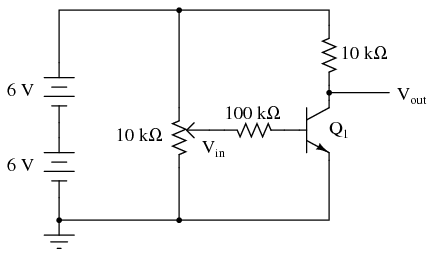
ILUSTRACIÓN
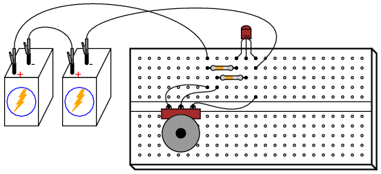
INSTRUCCIONES
Construya este circuito y mida el voltaje de salida (voltaje medido entre el terminal del colector del transistor y tierra) y el voltaje de entrada (voltaje medido entre el terminal limpiador del potenciómetro y tierra) para varios ajustes de posición del potenciómetro. Recomiendo determinar el rango de voltaje de salida a medida que el potenciómetro se ajusta en todo su rango de movimiento y luego elegir varios voltajes que abarquen ese rango de salida para tomar medidas. Por ejemplo, si la rotación completa del potenciómetro impulsa el voltaje de salida del circuito amplificador de 0,1 voltios (bajo) a 11,7 voltios (alto), elija varios niveles de voltaje entre esos límites (1 voltio, 3 voltios, 5 voltios, 7 voltios, 9 voltios y 11 voltios). Midiendo el voltaje de salida con un medidor, ajuste el potenciómetro para obtener cada uno de estos voltajes predeterminados en la salida, anotando la cifra exacta para referencia posterior. Luego, mida el voltaje de entrada exacto que produce ese voltaje de salida y registre también esa cifra de voltaje.
Al final, debería tener una tabla de números que representen varios voltajes de salida diferentes junto con sus voltajes de entrada correspondientes. Tome dos pares de cifras de voltaje y calcule la ganancia de voltaje dividiendo la diferencia en los voltajes de salida por la diferencia en los voltajes de entrada. Por ejemplo, si un voltaje de entrada de 1,5 voltios me da un voltaje de salida de 7,0 voltios y un voltaje de entrada de 1,66 voltios me da un voltaje de salida de 1,0 voltios, la ganancia de voltaje del amplificador es (7,0 - 1,0)/(1,66 - 1,5), o 6 dividido por 0,16: una relación de ganancia de 37,50.
Debería notar inmediatamente dos características al realizar estas mediciones de voltaje: primero, que el efecto de entrada a salida está "invertido"; es decir, uncrecienteEl voltaje de entrada resulta en unadecrecientevoltaje de salida. Este efecto se conoce como inversión de señal, y este tipo de amplificador comoinvirtiendoamplificador. En segundo lugar, este amplificador presenta una ganancia de voltaje muy fuerte: un pequeño cambio en el voltaje de entrada resulta en un gran cambio en el voltaje de salida. Esto debería contrastar marcadamente con el circuito amplificador "seguidor de voltaje" analizado anteriormente, que tenía una ganancia de voltaje de aproximadamente 1.
Los amplificadores de emisor común se utilizan ampliamente debido a su alta ganancia de voltaje, pero rara vez se utilizan en una forma tan tosca como ésta. Aunque este circuito amplificador sirve para demostrar el concepto básico, es muy susceptible a los cambios de temperatura. Intente dejar el potenciómetro en una posición y calentar el transistor sujetándolo firmemente con la mano o calentándolo con alguna otra fuente de calor como un secador de pelo eléctrico (ADVERTENCIA: ¡tenga cuidado de no calentarlo tanto que la placa de plástico se derrita!). También puede explorar los efectos de la temperatura enfriando el transistor: toque su superficie con un cubo de hielo y observe el cambio en el voltaje de salida.
Cuando la temperatura del transistor cambia, las características del diodo emisor de base cambian, lo que da como resultado diferentes cantidades de corriente de base para el mismo voltaje de entrada. Esto a su vez altera la corriente controlada a través del terminal del colector, afectando así el voltaje de salida. Estos cambios pueden minimizarse mediante el uso de señales.comentario, mediante el cual una parte del voltaje de salida se "realimenta" a la entrada del amplificador para tener un efecto negativo o de cancelación sobre la ganancia de voltaje. La estabilidad mejora a expensas de la ganancia de voltaje, una solución de compromiso, pero práctica de todos modos.
Quizás la forma más sencilla de agregar retroalimentación negativa a un amplificador de emisor común es agregar algo de resistencia entre el terminal del emisor y tierra, de modo que el voltaje de entrada se divida entre la unión PN base-emisor y la caída de voltaje a través de la nueva resistencia:
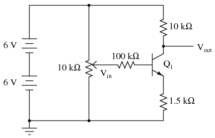
Repita el mismo ejercicio de medición y registro de voltaje con la resistencia de 1,5 kΩ instalada, calculando la nueva ganancia de voltaje (reducida). Intente alterar la temperatura del transistor nuevamente y observe el voltaje de salida para obtener un voltaje de entrada constante. ¿Cambia más o menos que sin la resistencia de 1,5 kΩ?
Otro método para introducir retroalimentación negativa en este circuito amplificador es "acoplar" la salida a la entrada a través de una resistencia de alto valor. Conectar una resistencia de 1 MΩ entre los terminales del colector y la base del transistor funciona bien:
Aunque este método diferente de retroalimentación logra el mismo objetivo de aumentar la estabilidad al disminuir la ganancia, los dos circuitos de retroalimentación no se comportarán de manera idéntica. Tenga en cuenta el rango de posibles voltajes de salida con cada esquema de retroalimentación (los valores de voltaje alto y bajo obtenidos con un barrido completo del potenciómetro de voltaje de entrada) y cómo esto difiere entre los dos circuitos.
SIMULACIÓN POR COMPUTADORA
Esquema con números de nodo SPICE:
Netlist (cree un archivo de texto que contenga el siguiente texto, textualmente):
Common-emitter amplifier vsupply 1 0 dc 12 vin 3 0 rc 1 2 10k rb 3 4 100k q1 2 4 0 mod1 .model mod1 npn bf=200 .dc vin 0 2 0.05 .plot dc v(2,0) v(3,0) .end
Esta simulación de SPICE configura un circuito con una fuente de voltaje CC variable (vin) como señal de entrada, y mide el voltaje de salida correspondiente entre los nodos 2 y 0. El voltaje de entrada varía o "barre" de 0 a 2 voltios en incrementos de 0,05 voltios. Los resultados se muestran en un gráfico, con el voltaje de entrada que aparece como una línea recta y el voltaje de salida como una figura de "escalón" donde el voltaje comienza y termina en el nivel, con un cambio pronunciado en el medio donde el transistor está en su modo activo de operación.
Multi-stage amplifier
PIEZAS Y MATERIALES
- Tres transistores NPN: se recomienda el modelo 2N2222 o 2N3403 (el catálogo de Radio Shack # 276-1617 es un paquete de quince transistores NPN ideal para este y otros experimentos)
- Dos baterías de 6 voltios
- Un potenciómetro de 10 kΩ, de una sola vuelta, de conicidad lineal (catálogo de Radio Shack # 271-1715)
- Una resistencia de 1 MΩ
- Tres resistencias de 100 kΩ
- Tres resistencias de 10 kΩ
REFERENCIAS CRUZADAS
Lecciones en circuitos eléctricos, Volumen 3, capítulo 4: "Transistores de unión bipolares"
OBJETIVOS DE APRENDIZAJE
- Diseño de un circuito amplificador de emisor común de acoplamiento directo de múltiples etapas.
- Efecto de la retroalimentación negativa en un circuito amplificador.
DIAGRAMA ESQUEMÁTICO
ILUSTRACIÓN
INSTRUCCIONES
Al conectar tres circuitos amplificadores de emisor común juntos (el terminal colector del transistor anterior a la base (resistencia) del siguiente transistor), las ganancias de voltaje de cada etapa se combinan para dar una ganancia de voltaje general muy alta. Recomiendo construir este circuito.sinPara empezar, utilice la resistencia de retroalimentación de 1 MΩ, para ver por sí mismo qué tan alta es la ganancia de voltaje sin restricciones. Puede que le resulte imposible ajustar el potenciómetro para obtener un voltaje de salida estable (que no esté saturado con el voltaje de suministro total o cero), ya que la ganancia es tan alta.
Incluso si no puede ajustar el voltaje de entrada lo suficientemente fino como para estabilizar el voltaje de salida en el rango activo del último transistor, debería poder decir que la relación salida-entrada se está invirtiendo; es decir, la salida tiende a alcanzar un voltaje alto cuando la entrada baja, y viceversa. Dado que cualquiera de las "etapas" de emisor común es invertida en sí misma, un número par de amplificadores de emisor común en etapas da una respuesta no inversora, mientras que un número impar de etapas da una respuesta inversora. Puede experimentar estas relaciones midiendo el voltaje del colector a tierra.en cada transistormientras ajusta el potenciómetro de voltaje de entrada, observe si el voltaje de salida aumenta o disminuye con un aumento en el voltaje de entrada.
Conecte la resistencia de retroalimentación de 1 MΩ al circuito, acoplando el colector del último transistor a la base del primero. Dado que la respuesta general de este amplificador de tres etapas es invertida, la señal de retroalimentación proporcionada a través de la resistencia de 1 MΩ desde la salida del último transistor hasta la entrada del primero debe sernegativoen la naturaleza. Como tal, actuará para estabilizar la respuesta del amplificador y minimizar la ganancia de voltaje. Debería notar la reducción en la ganancia inmediatamente por la disminución de la sensibilidad de la señal de salida ante los cambios de la señal de entrada (cambios en la posición del potenciómetro). En pocas palabras, el amplificador no es tan "delicado" como lo era sin la resistencia de retroalimentación en su lugar.
Al igual que con el amplificador simple de emisor común analizado en un experimento anterior, aquí es una buena idea hacer una tabla de cifras de voltaje de entrada versus voltaje de salida con la cual se puede calcular la ganancia de voltaje.
Experimente con diferentes valores de resistencia a la retroalimentación. ¿Qué efecto crees que tienedisminuir¿En la resistencia de retroalimentación tiene ganancia de voltaje? ¿Qué tal unaumentaren la resistencia a la retroalimentación? ¡Pruébalo y descúbrelo!
Una ventaja de utilizar retroalimentación negativa para "domesticar" un circuito amplificador de alta ganancia es que la ganancia de voltaje resultante se vuelve más dependiente de los valores de resistencia y menos dependiente de las características de los transistores constituyentes. Esto es bueno, porque es mucho más fácil fabricar resistencias consistentes que transistores consistentes. Por lo tanto, es más fácil diseñar un amplificador con ganancia predecible construyendo una red escalonada de transistores con una ganancia de voltaje arbitrariamente alta y luego mitigar esa ganancia precisamente mediante retroalimentación negativa. Es este mismo principio el que se utiliza para haceramplificador operacionalLos circuitos se comportan de manera tan predecible.
Este circuito amplificador está un poco simplificado de lo que normalmente encontrará en circuitos prácticos de múltiples etapas. Rara vez se utiliza una configuración pura de emisor común (es decir, sin resistencia de emisor a tierra), y si el servicio del amplificador es para señales de CA, el acoplamiento entre etapas suele ser capacitivo con redes divisorias de voltaje conectadas a cada base de transistor para una polarización adecuada de cada etapa. Los circuitos amplificadores de radiofrecuencia suelen estar acoplados por transformador, con condensadores conectados en paralelo con los devanados del transformador para una sintonización resonante.
SIMULACIÓN POR COMPUTADORA
Esquema con números de nodo SPICE:
Netlist (cree un archivo de texto que contenga el siguiente texto, textualmente):
Multi-stage amplifier vsupply 1 0 dc 12 vin 2 0 r1 2 3 100k r2 1 4 10k q1 4 3 0 mod1 r3 4 7 100k r4 1 5 10k q2 5 7 0 mod1 r5 5 8 100k r6 1 6 10k q3 6 8 0 mod1 rf 3 6 1meg .model mod1 npn bf=200 .dc vin 0 2.5 0.1 .plot dc v(6,0) v(2,0) .end
Esta simulación traza el voltaje de salida frente al voltaje de entrada y permite la comparación entre esas variables en forma numérica: una lista de cifras de voltaje impresas a la izquierda del gráfico. Puede calcular la ganancia de voltaje tomando dos puntos de análisis cualesquiera y dividiendo la diferencia en los voltajes de salida por la diferencia en los voltajes de entrada, tal como lo hace con el circuito real.
Experimente con diferentes valores de resistencia de retroalimentación (rf) y vea el impacto en la ganancia de voltaje general. ¿Notas un patrón? Aquí hay una pista: la ganancia de voltaje general se puede aproximar mucho usando las cifras de resistencia der1 y rf, ¡sin referencia a ningún otro componente del circuito!
Espejo de corriente
PIEZAS Y MATERIALES
- Dos transistores NPN: se recomiendan los modelos 2N2222 o 2N3403 (el catálogo de Radio Shack # 276-1617 es un paquete de quince transistores NPN ideal para este y otros experimentos)
- Dos baterías de 6 voltios
- Un potenciómetro de 10 kΩ, de una sola vuelta, de conicidad lineal (catálogo de Radio Shack # 271-1715)
- Dos resistencias de 10 kΩ
- Cuatro resistencias de 1,5 kΩ
Se recomiendan transistores de señal pequeña para poder experimentar una "fuga térmica" en la última parte del experimento. Es posible que los transistores de "potencia" más grandes no presenten el mismo comportamiento en estos bajos niveles de corriente. Sin embargo,anySe puede utilizar un par de transistores NPN idénticos para construir un espejo de corriente.
Tenga en cuenta que no todos los transistores comparten las mismas designaciones de terminales, oconfiguración de pines, incluso si comparten la misma apariencia física. Esto determinará cómo conectar los transistores entre sí y a otros componentes, así que asegúrese de verificar las especificaciones del fabricante (hoja de datos de los componentes), que se puede obtener fácilmente en el sitio web del fabricante. ¡Tenga en cuenta que es posible que el paquete del transistor e incluso la hoja de datos del fabricante muestren diagramas de identificación de terminales incorrectos! Se recomienda encarecidamente verificar las identidades de los pines con la función de "verificación de diodos" de su multímetro. Para obtener detalles sobre cómo identificar terminales de transistores bipolares usando un multímetro, consulte el capítulo 4 del volumen Semiconductores (volumen III) de esta serie de libros.
REFERENCIAS CRUZADAS
Lecciones en circuitos eléctricos, Volumen 3, capítulo 4: "Transistores de unión bipolares"
OBJETIVOS DE APRENDIZAJE
- Cómo construir un circuito espejo de corriente
- Limitaciones actuales de un circuito espejo de corriente.
- Dependencia de la temperatura de los BJT
- Experimente una situación controlada de "fuga térmica"
DIAGRAMA ESQUEMÁTICO
ILUSTRACIÓN
INSTRUCCIONES
Un espejo de corriente puede considerarse como unregulador de corriente ajustable, el límite de corriente se establece fácilmente mediante una única resistencia. Es un circuito regulador de corriente bastante tosco, pero que encuentra un amplio uso debido a su simplicidad. En este experimento, tendrá la oportunidad de construir uno de estos circuitos, explorar sus propiedades de regulación de corriente y también experimentar de primera mano algunas de sus limitaciones prácticas.
Construya el circuito como se muestra en el esquema y la ilustración. Tendrá una resistencia adicional de valor fijo de 1,5 kΩ de las piezas especificadas en la lista de piezas. Lo usará en la última parte de este experimento.
El potenciómetro establece la cantidad de corriente que pasa por el transistor Q.1. Este transistor está conectado para actuar como un diodo simple: solo una unión PN. ¿Por qué utilizar un transistor en lugar de un diodo normal? Porque es importantefósforolas características de unión de estos dos transistores cuando se usan en un circuito espejo de corriente. Caída de voltaje en la unión base-emisor de Q1se imprime a través de la unión base-emisor del otro transistor, Q2, haciendo que se "encienda" y también conduzca corriente.
Dado que el voltaje a través de las uniones base-emisor de los dos transistores es el mismo (los dos pares de uniones están conectados en paralelo entre sí), la corriente también debería pasar a través de sus terminales base, asumiendo características de unión idénticas y temperaturas de unión idénticas. Los transistores emparejados también deben tener las mismas relaciones β, por lo que corrientes de base iguales significan corrientes de colector iguales. El resultado práctico de todo esto es Q2La corriente del colector de Q imita cualquier magnitud de corriente que se haya establecido a través del colector de Q.1por el potenciómetro. En otras palabras, la corriente a través de Q2 espejosla corriente a través de Q1.
Cambios en la resistencia de carga (resistencia que conecta el colector de Q2al lado positivo de la batería) no tienen ningún efecto sobre Q1y, en consecuencia, no tienen ningún efecto sobre el voltaje base-emisor o la corriente base de Q2. Con una corriente de base constante y una relación β casi constante, Q2caerá tanto o tan poco voltaje colector-emisor como sea necesario para mantener constante la corriente del colector (carga). Por lo tanto, el circuito espejo de corriente actúa pararegularcorriente a un valor establecido por el potenciómetro, sin tener en cuenta la resistencia de carga.
Bueno, de todos modos así es como se supone que debe funcionar. La realidad no es tan simple como estás a punto de ver. En el diagrama de circuito que se muestra, el circuito de carga de Q2Se completa con el lado positivo de la batería a través de un amperímetro, para facilitar la medición de la corriente. En lugar de conectar sólidamente la sonda negra del amperímetro a un punto definido del circuito, marqué cincopuntos de prueba, TP1 a TP5, para que pueda tocar la sonda de prueba negra mientras mide la corriente. Esto le permite cambiar la resistencia de carga de forma rápida y sin esfuerzo: tocar TP1 con la sonda prácticamente no produce resistencia de carga, mientras que tocar TP5 da como resultado aproximadamente 14,5 kΩ de resistencia de carga.
Para comenzar el experimento, toque TP4 con la sonda de prueba y ajuste el potenciómetro en su rango de recorrido. Deberías ver una pequeña corriente cambiante indicada por tu amperímetro a medida que mueves el mecanismo del potenciómetro: no más de unos pocos miliamperios. Deje el potenciómetro en una posición que proporcione un número redondo de miliamperios y mueva la sonda de prueba negra del medidor a TP3. La indicación de corriente debería ser casi la misma que antes. Mueva la sonda a TP2 y luego a TP1. Nuevamente, debería ver una cantidad de corriente casi sin cambios. Intente ajustar el potenciómetro a otra posición, dando una indicación de corriente diferente, y toque la sonda negra del medidor para probar los puntos TP1 a TP4, observando la estabilidad de las indicaciones de corriente a medida que cambia la resistencia de carga. Esto demuestra el comportamiento de regulación de corriente de este circuito.
Cabe señalar que la regulación de corriente no es perfecta. A pesar de regular la corriente encerca deel valor para resistencias de carga entre 0 y 4,5 kΩ, existe cierta variación en este rango. La regulación puede ser mucho peor si se permite que la resistencia de la carga aumente demasiado. Intente ajustar el potenciómetro para que se obtenga la corriente máxima, como se indica con la punta de prueba del amperímetro conectada a TP1. Dejando el potenciómetro en esa posición, mueva la sonda del medidor a TP2, luego TP3, luego TP4 y finalmente TP5, observando la indicación del medidor en cada punto de conexión. La corriente debe regularse a un valor casi constante hasta que la sonda del medidor se mueva al último punto de prueba, TP5. Allí la indicación de corriente será sustancialmente menor que en otros puntos de prueba. ¿Por qué es esto? Porque se ha insertado demasiada resistencia de carga en Q2El circuito. En pocas palabras, Q.2no puede "encenderse" más de lo que ya lo tiene, para mantener la misma cantidad de corriente con esta gran resistencia de carga que con resistencias de carga menores.
Este fenómeno es común a todos los circuitos reguladores de corriente: hay una cantidad limitada de resistencia que un regulador de corriente puede manejar antes de quesatura. Esto es lógico, ya que cualquier circuito regulador de corriente capaz de suministrar una cantidad constante de corriente a través deany¡La resistencia de carga imaginable requeriría una fuente ilimitada de voltaje para hacerlo! La Ley de Ohm (E=IR) dicta la cantidad de voltaje necesaria para impulsar una determinada cantidad de corriente a través de una determinada cantidad de resistencia, y con solo 12 voltios de voltaje de suministro de energía a nuestra disposición, definitivamente existe un límite finito de corriente de carga y resistencia de carga para este circuito. Por esta razón, puede ser útil pensar en los circuitos reguladores de corriente como si fueran corrientes.limitadorcircuitos, porque todo lo que realmente pueden hacer es limitar la corriente a un valor máximo.
Una advertencia importante para los circuitos espejo de corriente en general es la de la misma temperatura entre los dos transistores. La "replicación" de corriente que se produce entre los circuitos colectores de los dos transistores depende de que las uniones base-emisor de esos dos transistores tengan exactamente las mismas propiedades. Como lo describe la "ecuación del diodo", la relación voltaje/corriente para una unión PN depende en gran medida de la unióntemperatura. Cuanto más caliente esté una unión PN, más corriente pasará para una determinada cantidad de caída de voltaje. Si un transistor se calienta más que el otro, pasará más corriente de colector que el otro y el circuito ya no "reflejará" la corriente como se esperaba. Al construir un circuito espejo de corriente real usando transistores discretos, los dos transistores deben pegarse con pegamento epoxi (espalda con espalda) para que permanezcan aproximadamente a la misma temperatura.
Para ilustrar esta dependencia de la igualdad de temperatura, intente agarrar un transistor entre los dedos para calentarlo. ¿Qué sucede con la corriente que pasa por las resistencias de carga a medida que aumenta la temperatura del transistor? Ahora, suelta el transistor y sopla para enfriarlo a temperatura ambiente. Agarre elotrotransistor entre los dedos para calentarlo. ¿Qué hace la corriente de carga ahora?
En la siguiente fase del experimento, permitiremos intencionalmente que uno de los transistores se sobrecaliente y notaremos los efectos. Para evitar dañar un transistor, este procedimiento no debe realizarse más tiempo del necesario para observar que la corriente de carga comienza a "escaparse". Para comenzar, ajuste el potenciómetro a la corriente mínima. A continuación, reemplace el R de 10 kΩ.límiteresistencia con una resistencia de 1,5 kΩ. Esto permitirá que pase una corriente más alta a través de Q1, y en consecuencia a través de Q2también.
Coloque la sonda negra del amperímetro en TP1 y observe la indicación de corriente. Mueva el potenciómetro en la dirección de aumento de la corriente hasta que lea aproximadamente 10 mA a través del amperímetro. En ese punto, deja de mover el potenciómetro y simplemente observa la corriente. ¡Notarás que la corriente comienza a aumentar por sí sola, sin más movimiento del potenciómetro! Romper el circuito retirando la sonda del medidor del TP1 cuando la corriente supere los 30 mA, para evitar dañar el transistor Q.2.
Si toca cuidadosamente ambos transistores con un dedo, debería notar Q2es cálido, mientras q1es genial.Advertencia:si q2Si a la corriente se le ha permitido "escaparse" demasiado o durante demasiado tiempo, puede volversemuy caliente! Puede sufrir una quemadura grave en la punta del dedo si toca un componente semiconductor sobrecalentado, ¡así que tenga cuidado!
¿Qué acaba de pasar para hacer Q?2¿Se sobrecalienta y pierde el control de la corriente? Al conectar el amperímetro a TP1, se eliminó toda la resistencia de carga, por lo que Q2Tuvo que bajar el voltaje total de la batería entre el colector y el emisor mientras regulaba la corriente. Transistor Q1al menos tenía la resistencia de 1,5 kΩ de Rlímiteen su lugar para reducir la mayor parte del voltaje de la batería, por lo que su disipación de energía fue mucho menor que la de Q2. Este grave desequilibrio en la disipación de energía provocó que Q2calentar más de Q1. A medida que aumentaba la temperatura, Q2comenzó a pasar más corriente por la misma cantidad de caída de voltaje base-emisor. Esto hizo que se calentara aún más rápido, ya que pasaba más corriente del colector y al mismo tiempo caía los 12 voltios completos entre el colector y el emisor. El efecto se conoce comofuga térmica, y es posible en muchos circuitos de transistores de unión bipolar, no solo en espejos de corriente.
SIMULACIÓN POR COMPUTADORA
Esquema con números de nodo SPICE:
Netlist (cree un archivo de texto que contenga el siguiente texto, textualmente):
Current mirror v1 1 0 vammeter 1 3 dc 0 rlimit 1 2 10k rload 3 4 3k q1 2 2 0 mod1 q2 4 2 0 mod1 .model mod1 npn bf=100 .dc v1 12 12 1 .print dc i(vammeter) .end
VamperímetroNo es más que una batería de CC de cero voltios ubicada estratégicamente para interceptar la corriente de carga. Esto no es más que un truco para medir la corriente en una simulación SPICE, ya que no existe ningún componente "amperímetro" dedicado en el lenguaje SPICE.
Es importante recordar que SPICE sólo reconoce los primeros ocho caracteres del nombre de un componente. El nombre "vammeter" está bien, pero si incorporamos más de una fuente de voltaje de medición de corriente en el circuito y las llamamos "vammeter1" y "vammeter2", respectivamente, SPICE las vería como dos instancias del mismo componente "vammeter" (viendo solo los primeros ocho caracteres) y se detendría con un error. ¡Algo a tener en cuenta al modificar la lista de redes o programar tu propia simulación SPICE!
Tendrás que experimentar con diferentes valores de resistencia de Rcargaen esta simulación para apreciar la naturaleza reguladora de corriente del circuito. con rlímiteajustado a 10 kΩ y un voltaje de alimentación de 12 voltios, la corriente regulada a través de Rcargaserá de 1,1 mA. SPICE muestra que la regulación es perfecta (¿no es tan bonito el mundo virtual de la simulación por ordenador?), la corriente de carga permanece en 1,1 mA durante unanchorango de resistencias de carga. Sin embargo, si la resistencia de carga aumenta más allá de 10 kΩ, incluso esta simulación muestra que la corriente de carga sufre una disminución como en la vida real.
Regulador de corriente con JFET
PIEZAS Y MATERIALES
- Un transistor de efecto de campo de unión de canal N, se recomiendan los modelos 2N3819 o J309 (el catálogo de Radio Shack # 276-2035 es el modelo 2N3819)
- Dos baterías de 6 voltios
- Un potenciómetro de 10 kΩ, de una sola vuelta, de conicidad lineal (catálogo de Radio Shack # 271-1715)
- Una resistencia de 1 kΩ
- Una resistencia de 10 kΩ
- Tres resistencias de 1,5 kΩ
Para este experimento necesitarás un JFET de canal N, ¡no un canal P!
Tenga en cuenta que no todos los transistores comparten las mismas designaciones de terminales, oconfiguración de pines, incluso si comparten la misma apariencia física. Esto determinará cómo conectar los transistores entre sí y a otros componentes, así que asegúrese de verificar las especificaciones del fabricante (hoja de datos de los componentes), que se puede obtener fácilmente en el sitio web del fabricante. ¡Tenga en cuenta que es posible que el paquete del transistor e incluso la hoja de datos del fabricante muestren diagramas de identificación de terminales incorrectos! Se recomienda encarecidamente verificar las identidades de los pines con la función de "verificación de diodos" de su multímetro. Para obtener detalles sobre cómo identificar terminales de transistores de efecto de campo de unión usando un multímetro, consulte el capítulo 5 del volumen Semiconductores (volumen III) de esta serie de libros.
REFERENCIAS CRUZADAS
Lecciones en circuitos eléctricos, Volumen 3, capítulo 5: "Transistores de efecto de campo de unión"
Lecciones en circuitos eléctricos, Volumen 3, capítulo 3: "Diodos y Rectificadores"
OBJETIVOS DE APRENDIZAJE
- Cómo utilizar un JFET como regulador de corriente
- Cómo el JFET es relativamente inmune a los cambios de temperatura
DIAGRAMA ESQUEMÁTICO
ILUSTRACIÓN
INSTRUCCIONES
Anteriormente en este capítulo, viste cómo un par de transistores de unión bipolar (BJT) podrían usarse para formar unespejo de corriente, mediante el cual un transistor intentaría mantener a través de él la misma corriente que a través del otro, estableciendo el nivel de corriente del otro mediante una resistencia variable. Este circuito realiza la misma tarea de regular la corriente, pero utiliza un transistor de efecto de campo de unión única (JFET) en lugar de dos BJT.
Las dos resistencias en serie Rajustary rlímiteestablece el punto de regulación de corriente, mientras que las resistencias de carga y los puntos de prueba entre ellos sirven solo para demostrar una corriente constante a pesar de los cambios en la resistencia de la carga.
Para comenzar el experimento, toque TP4 con la sonda de prueba y ajuste el potenciómetro en su rango de recorrido. Deberías ver una pequeña corriente cambiante indicada por tu amperímetro a medida que mueves el mecanismo del potenciómetro: no más de unos pocos miliamperios. Deje el potenciómetro en una posición que proporcione un número redondo de miliamperios y mueva la sonda de prueba negra del medidor a TP3. La indicación de corriente debería ser casi la misma que antes. Mueva la sonda a TP2 y luego a TP1. Nuevamente, debería ver una cantidad de corriente casi sin cambios. Intente ajustar el potenciómetro a otra posición, dando una indicación de corriente diferente, y toque la sonda negra del medidor para probar los puntos TP1 a TP4, observando la estabilidad de las indicaciones de corriente a medida que cambia la resistencia de carga. Esto demuestra el comportamiento de regulación de corriente de este circuito.
Se proporciona TP5, al final de una resistencia de 10 kΩ, para introducir un gran cambio en la resistencia de carga. Conectar la sonda de prueba negra de su amperímetro a ese punto de prueba proporciona una resistencia de carga combinada de 14,5 kΩ, que será demasiada resistencia para que el transistor mantenga la máxima corriente regulada. Para experimentar lo que estoy describiendo aquí, toque TP1 con la sonda de prueba negra y ajuste el potenciómetro para obtener la corriente máxima. Ahora, mueva la sonda de prueba negra a TP2, luego a TP3 y luego a TP4. Para todas estas posiciones de puntos de prueba, la corriente permanecerá aproximadamente constante. Sin embargo, cuando toca TP5 con la sonda negra, la corriente caerá dramáticamente. ¿Por qué? Porque a este nivel de resistencia de carga, no hay suficiente caída de voltaje a través del transistor para mantener la regulación. En otras palabras, el transistor se saturará mientras intenta proporcionar más corriente de la que permite la resistencia del circuito.
Mueva la sonda de prueba negra nuevamente a TP1 y ajuste el potenciómetro para obtener la corriente mínima. Ahora, toque con la sonda de prueba negra TP2, luego TP3, luego TP4 y finalmente TP5. ¿Qué observa sobre la indicación de corriente en todos estos puntos? Cuando el punto de regulación de corriente se ajusta a un valor menor, el transistor puede mantener la regulación en un rango mucho mayor de resistencia de carga.
Una advertencia importante con el circuito espejo de corriente BJT es que ambos transistores deben estar a la misma temperatura para que las dos corrientes sean iguales. Sin embargo, con este circuito la temperatura del transistor es casi irrelevante. Intente agarrar el transistor entre sus dedos para calentarlo y observe la corriente de carga con su amperímetro. Intente enfriarlo después soplando sobre él. No sólo se elimina el requisito de adaptación de transistores (debido al uso de soloonetransistor), pero los efectos térmicos también se eliminan prácticamente debido a la relativa inmunidad térmica del transistor de efecto de campo. Este comportamiento también hace que los transistores de efecto de campo sean inmunes al descontrol térmico; una ventaja decidida sobre los transistores de unión bipolar.
Una aplicación interesante de este circuito regulador de corriente es el llamadodiodo de corriente constante. Descrito en el capítulo "Diodos y rectificadores" del volumen III, este diodo no es en realidad un dispositivo de unión PN. En cambio, es un JFET con una resistencia fija conectada entre la puerta y los terminales de fuente:
Se incluye un diodo de unión PN normal en serie con el JFET para proteger el transistor contra daños causados por voltaje de polarización inversa, pero por lo demás, la función de regulación de corriente de este dispositivo la proporciona enteramente el transistor de efecto de campo.
SIMULACIÓN POR COMPUTADORA
Esquema con números de nodo SPICE:
Netlist (cree un archivo de texto que contenga el siguiente texto, textualmente):
JFET current regulator vsource 1 0 rload 1 2 4.5k j1 2 0 3 mod1 rlimit 3 0 1k .model mod1 njf .dc vsource 6 12 0.1 .plot dc i(vsource) .end
SPICE no permite valores de resistencia de "barrido", por lo que para demostrar la regulación de corriente de este circuito en una amplia gama de condiciones, elegí barrer el voltaje de la fuente de 6 a 12 voltios en pasos de 0,1 voltios. Si lo deseas, puedes configurarcargara diferentes valores de resistencia y verificar que la corriente del circuito permanezca constante. con unlímitevalor de 1 kΩ, la corriente regulada será de 291,8 µA. Esta cifra de corriente probablementenotser la misma que la corriente real de su circuito, debido a diferencias en los parámetros JFET.
Muchos fabricantes dan parámetros del modelo SPICE para sus transistores, que pueden escribirse en el.modelolínea de la lista de redes para una simulación de circuito más precisa.
Differential amplifier
PIEZAS Y MATERIALES
- Dos baterías de 6 voltios
- Dos transistores NPN: se recomiendan los modelos 2N2222 o 2N3403 (el catálogo de Radio Shack # 276-1617 es un paquete de quince transistores NPN ideal para este y otros experimentos)
- Dos potenciómetros de 10 kΩ, de una sola vuelta, de conicidad lineal (catálogo de Radio Shack # 271-1715)
- Dos resistencias de 22 kΩ
- Dos resistencias de 10 kΩ
- Una resistencia de 100 kΩ
- Una resistencia de 1,5 kΩ
Los valores de resistencia no son especialmente críticos en este experimento, pero se han elegido para proporcionar una ganancia de alto voltaje para un comportamiento de amplificador diferencial "similar a un comparador".
REFERENCIAS CRUZADAS
Lecciones en circuitos eléctricos, Volumen 3, capítulo 4: "Transistores de unión bipolares"
Lecciones en circuitos eléctricos, Volumen 3, capítulo 8: "Amplificadores operacionales"
OBJETIVOS DE APRENDIZAJE
- Diseño básico de un circuito amplificador diferencial.
- Definiciones prácticas dediferencial y modo comúnvoltajes
DIAGRAMA ESQUEMÁTICO
ILUSTRACIÓN
INSTRUCCIONES
Este circuito forma el corazón de la mayoría de los circuitos amplificadores operacionales: elpar diferencial. En la forma que se muestra aquí, es un amplificador diferencial bastante tosco, bastante no lineal y asimétrico con respecto al voltaje de salida versus el voltaje de entrada. Sin embargo, con una ganancia de alto voltaje creada por una gran relación de resistencia colector/emisor (100 kΩ/1,5 kΩ), actúa principalmente como un comparador: el voltaje de salida cambia rápidamente de valor a medida que las dos señales de voltaje de entrada se acercan a la igualdad.
Mida el voltaje de salida (voltaje en el colector de Q2con respecto a tierra) a medida que varían los voltajes de entrada. Observe cómo los dos potenciómetros tienen efectos diferentes sobre el voltaje de salida: una entrada tiende a impulsar el voltaje de salida en la misma dirección (no inversora), mientras que la otra tiende a impulsar el voltaje de salida en la dirección opuesta (inversión). Esta es la naturaleza esencial de unaamplificador diferencial: dos entradas complementarias, con efectos contrarios en la señal de salida. Idealmente, el voltaje de salida de dicho amplificador es estrictamente una función de ladiferenciaentre las dos señales de entrada. Este circuito está considerablemente por debajo del ideal, como lo revelará incluso una prueba superficial.
Un amplificador diferencial ideal ignora todosvoltaje de modo común, que es cualquier nivel de voltaje común a ambas entradas. Por ejemplo, si la entrada inversora es de 3 voltios y la entrada no inversora de 2,5 voltios, el voltaje diferencial será de 0,5 voltios (3 - 2,5) pero el voltaje de modo común será de 2,5 voltios, ya que ese es el nivel de señal de entrada más bajo. Idealmente, esta condición debería producir el mismo voltaje de señal de salida que si las entradas estuvieran configuradas en 3,5 y 3 voltios, respectivamente (diferencial de 0,5 voltios, con un voltaje de modo común de 3 voltios). Sin embargo, este circuito nonotdar el mismo resultado para los dos escenarios de señal de entrada diferentes. En otras palabras, su voltaje de salida depende tanto del voltaje diferencialyel voltaje de modo común.
Por imperfecto que sea este amplificador diferencial, su comportamiento podría ser peor. Observe cómo los potenciómetros de señal de entrada se han limitado mediante resistencias de 22 kΩ a un rango ajustable de aproximadamente 0 a 4 voltios, dado un voltaje de fuente de alimentación de 12 voltios. Si desea ver cómo se comporta este circuito sin ninguna limitación de señal de entrada, simplemente omita las resistencias de 22 kΩ con cables de puente, permitiendo un rango de ajuste completo de 0 a 12 voltios desde cada potenciómetro.
¡No se preocupe por generar calor excesivo mientras ajusta los potenciómetros en este circuito! A diferencia del circuito espejo de corriente, este circuito está protegido de la fuga térmica mediante la resistencia del emisor (1,5 kΩ), que no permite que la corriente del transistor sea suficiente como para causar ningún problema.
Simple op-amp
PIEZAS Y MATERIALES
- Dos baterías de 6 voltios
- Cuatro transistores NPN: se recomiendan los modelos 2N2222 o 2N3403 (el catálogo de Radio Shack # 276-1617 es un paquete de quince transistores NPN ideal para este y otros experimentos)
- Dos transistores PNP: se recomiendan los modelos 2N2907 o 2N3906 (el catálogo de Radio Shack # 276-1604 es un paquete de quince transistores PNP ideal para este y otros experimentos)
- Dos potenciómetros de 10 kΩ, de una sola vuelta, de conicidad lineal (catálogo de Radio Shack # 271-1715)
- Una resistencia de 270 kΩ
- Tres resistencias de 100 kΩ
- Una resistencia de 10 kΩ
REFERENCIAS CRUZADAS
Lecciones en circuitos eléctricos, Volumen 3, capítulo 4: "Transistores de unión bipolares"
Lecciones en circuitos eléctricos, Volumen 3, capítulo 8: "Amplificadores operacionales"
OBJETIVOS DE APRENDIZAJE
- Diseño de un circuito amplificador diferencial mediante espejos de corriente.
- Efectos de la retroalimentación negativa en un amplificador diferencial de alta ganancia.
DIAGRAMA ESQUEMÁTICO
ILUSTRACIÓN
INSTRUCCIONES
Este diseño de circuito mejora el amplificador diferencial mostrado anteriormente. En lugar de utilizar resistencias para reducir el voltaje en el circuito de par diferencial, se utiliza un conjunto de espejos de corriente, lo que da como resultado una mayor ganancia de voltaje y un rendimiento más predecible. Con una ganancia de voltaje más alta, este circuito puede funcionar como un amplificador operacional en funcionamiento, oamplificador operacional. Los amplificadores operacionales forman la base de muchos circuitos semiconductores analógicos modernos, por lo que es importante comprender el funcionamiento interno de un amplificador operacional.
Transistores PNP Q1y q2Formar un espejo de corriente que intenta mantener la corriente dividida equitativamente a través de los dos pares diferenciales de transistores Q.3y q4. Transistores NPN Q5y q6formar otro espejo de corriente, estableciendo eltotalcorriente de par diferencial a un nivel predeterminado por la resistencia Rprg.
Mida el voltaje de salida (voltaje en el colector de Q4con respecto a tierra) a medida que varían los voltajes de entrada. Observe cómo los dos potenciómetros tienen efectos diferentes sobre el voltaje de salida: una entrada tiende a impulsar el voltaje de salida en la misma dirección (no inversora), mientras que la otra tiende a impulsar el voltaje de salida en la dirección opuesta (inversión). Notará que el voltaje de salida responde mejor a los cambios en la entrada cuando las dos señales de entrada son casi iguales entre sí.
Una vez que se haya demostrado la respuesta diferencial del circuito (el voltaje de salida pasa bruscamente de un nivel extremo a otro cuando una entrada se ajusta por encima y por debajo del nivel de voltaje de la otra entrada), estará listo para usar este circuito como un amplificador operacional real. Un circuito de amplificador operacional simple llamadoseguidor de voltajeEs una buena configuración para probar primero. Para hacer un circuito seguidor de voltaje, conecte directamente la salida del amplificador a su entrada inversora. Esto significa conectar los terminales del colector y de la base de Q4juntos, y desechando el potenciómetro "inversor":
Observe el símbolo triangular del amplificador operacional que se muestra en el diagrama esquemático inferior. Las entradas inversoras y no inversoras se designan con los símbolos (-) y (+), respectivamente, con el terminal de salida en el vértice derecho. El cable de retroalimentación que conecta la salida a la entrada inversora se muestra en rojo en los diagramas anteriores.
Como seguidor de voltaje, el voltaje de salida debe "seguir" muy de cerca al voltaje de entrada, desviándose no más de unas pocas centésimas de voltio. ¡Este es un circuito seguidor mucho más preciso que el de un solo transistor de colector común, descrito en un experimento anterior!
Un circuito de amplificador operacional más complejo se llamaamplificador no inversor, y utiliza un par de resistencias en el circuito de retroalimentación para "realimentar" una fracción del voltaje de salida a la entrada inversora, lo que hace que el amplificador genere un voltaje igual a algún múltiplo del voltaje en la entrada no inversora. Si utilizamos dos resistencias de igual valor, el voltaje de retroalimentación será la mitad del voltaje de salida, lo que hará que el voltaje de salida sea el doble del voltaje impreso en la entrada no inversora. Así, tenemos un amplificador de voltaje con una ganancia precisa de 2:
Al probar este circuito amplificador no inversor, es posible que observe ligeras discrepancias entre los voltajes de salida y entrada. Según los valores de la resistencia de retroalimentación, la ganancia de voltaje debe ser exactamente 2. Sin embargo, puede notar desviaciones del orden de varias centésimas de voltio entre el voltaje de salida y el que debería ser. Estas desviaciones se deben a imperfecciones del circuito amplificador diferencial y pueden disminuir considerablemente si agregamos más etapas de amplificación para aumentar la ganancia de voltaje diferencial. Sin embargo, una forma de maximizar la precisión del circuito existente es cambiar la resistencia de Rprg. Esta resistencia establece el punto de control del espejo de corriente inferior y, al hacerlo, influye en muchos parámetros de rendimiento del amplificador operacional. Intente sustituir valores de resistencia diferentes, que van desde 10 kΩ a 1 MΩ. No utilice una resistencia inferior a 10 kΩ; de lo contrario, los transistores espejo de corriente podrían comenzar a sobrecalentarse y "escaparse" térmicamente.
Algunos amplificadores operacionales disponibles en unidades empaquetadas proporcionan una manera para que el usuario "programe" de manera similar el espejo de corriente del par diferencial, y se denominanprogramableamplificadores operacionales. La mayoría de los amplificadores operacionales no son programables y tienen sus puntos de control del espejo de corriente internos fijados por una resistencia interna, ajustada a un valor preciso en fábrica.
Audio oscillator
PIEZAS Y MATERIALES
- Dos baterías de 6 voltios
- Tres transistores NPN: se recomiendan los modelos 2N2222 o 2N3403 (el catálogo de Radio Shack # 276-1617 es un paquete de quince transistores NPN ideal para este y otros experimentos)
- Dos condensadores de 0,1 µF (catálogo de Radio Shack n.° 272-135 o equivalente)
- Una resistencia de 1 MΩ
- Dos resistencias de 100 kΩ
- Una resistencia de 1 kΩ
- Surtido de pares de resistencias, menos de 100 kΩ (ej: dos de 10 kΩ, dos de 5 kΩ, dos de 1 kΩ)
- Un diodo emisor de luz (catálogo de Radio Shack # 276-026 o equivalente)
- Detector de audio con auriculares.
REFERENCIAS CRUZADAS
Lecciones en circuitos eléctricos, Volumen 3, capítulo 4: "Transistores de unión bipolares"
Lecciones en circuitos eléctricos, Volumen 4, capítulo 10: "Multivibradores"
OBJETIVOS DE APRENDIZAJE
- Cómo construir un circuito multivibrador astable usando transistores discretos
DIAGRAMA ESQUEMÁTICO
ILUSTRACIÓN
INSTRUCCIONES
El nombre propio de este circuito es "multivibrador astable". Es un circuito oscilador simple y de funcionamiento libre sincronizado por los tamaños de las resistencias, los condensadores y el voltaje de la fuente de alimentación. Desafortunadamente, su forma de onda de salida está muy distorsionada, ni sinusoidal ni cuadrada. Sin embargo, para el simple propósito de generar un tono de audio, la distorsión no importa mucho.
Con una fuente de alimentación de 12 voltios, resistencias de 100 kΩ y condensadores de 0,1 µF, la frecuencia de oscilación estará en el rango de audio bajo. Puede escuchar esta señal con el detector de audio conectado con una punta de prueba a tierra y la otra a uno de los terminales del colector del transistor. Recomiendo colocar una resistencia de 1 MΩ en serie con el detector de audio para minimizar tanto los efectos de carga del circuito como el volumen de los auriculares:
El multivibrador en sí consta solo de dos transistores, dos resistencias y dos condensadores de conexión cruzada. El tercer transistor que se muestra en el esquema y la ilustración está ahí para controlar el LED, que se utilizará como indicador visual de la acción del oscilador. Utilice el cable de sonda conectado a la base de este amplificador de emisor común para detectar voltaje en diferentes partes del circuito con respecto a tierra. Dada la baja frecuencia de oscilación de este circuito multivibrador, debería poder ver el LED parpadear rápidamente con el cable de la sonda conectado al terminal colector de cualquiera de los transistores multivibrador.
Puede notar que el LED no parpadea cuando el cable de la sonda toca elbasede cualquiera de los transistores multivibrador, pero el detector de audio le indica que hay un voltaje oscilante allí. ¿Por qué es esto? El amplificador de transistor de colector común del LED es un seguidor de voltaje, lo que significa que no amplifica el voltaje. Por lo tanto, si el voltaje bajo prueba es menor que el mínimo requerido por el LED para encenderse, no brillará. Dado que la unión base-emisor con polarización directa de un transistor activo cae sólo alrededor de 0,7 voltios, no hay voltaje suficiente en ninguna de las bases del transistor para energizar el LED. Sin embargo, el detector de audio, al ser extraordinariamente sensible, detecta fácilmente esta señal de bajo voltaje.
Siéntase libre de sustituir resistencias de menor valor en lugar de las dos unidades de 100 kΩ que se muestran. ¿Qué sucede con la frecuencia de oscilación cuando lo haces? Recomiendo usar resistencias de al menos 1 kΩ de tamaño para evitar una corriente excesiva del transistor.
Una desventaja de muchos circuitos osciladores es su dependencia de una cantidad mínima de voltaje de suministro de energía. Muy poco voltaje y el circuito deja de oscilar. Este circuito no es una excepción. Es posible que desee experimentar con voltajes de suministro más bajos y determinar el voltaje mínimo necesario para la oscilación, así como experimentar el efecto que tiene el cambio de voltaje de suministro en la frecuencia de oscilación.
Una deficiencia específica de este circuito es la dependencia de componentes que no coinciden para un arranque exitoso. Para que el circuito comience a oscilar, un transistor debe encenderse antes que el otro. Por lo general, hay suficiente discrepancia en los distintos valores de los componentes para permitir que esto suceda, pero es posible que el circuito se "congela" y no oscila en el momento del encendido. Si esto sucede, pruebe con diferentes componentes (mismos valores, pero diferentes unidades) en el circuito.
Vacuum tube audio amplifier
PIEZAS Y MATERIALES
- Un tubo de vacío de doble triodo 12AX7
- Dos transformadores de potencia, reductor de 120 VCA a 12 VCA (catálogo de Radio Shack # 273-1365, 273-1352 o 273-1511).
- Módulo rectificador de puente (catálogo Radio Shack # 276-1173)
- Condensador electrolítico, de al menos 47 µF, con un voltaje de trabajo de al menos 200 voltios CC.
- Bobina de encendido automotriz
- Altavoz de audio, impedancia de 8 Ω
- Dos resistencias de 100 kΩ
- Un capacitor de 0.1 µF, 250 WVDC (catálogo de Radio Shack # 272-1053)
- "Fuente de alimentación de CA de bajo voltaje" como se muestra en el capítulo Experimentos de CA
- Un interruptor de palanca, SPST ("unipolar, unidireccional")
- Radio, reproductor de cintas, teclado musical u otra fuente de señal de voltaje de audio
¿Dónde se puede conseguir un tubo 12AX7? Estas válvulas son muy populares para su uso en las etapas de "preamplificador" de muchos amplificadores de guitarra eléctrica profesionales. Vaya a cualquier buena tienda de música y los encontrará disponibles por un precio módico (12 dólares estadounidenses o menos). Un fabricante ruso llamado Sovtek fabrica estos tubos nuevos, por lo que no es necesario confiar en los componentes "New-Old-Stock" (NOS) que quedan de los desaparecidos fabricantes estadounidenses. Este modelo de tubo fue muy popular en su época y se puede encontrar en antiguos equipos de prueba electrónicos "entubados" (osciloscopios, osciladores), si tiene acceso a dichos equipos. Sin embargo, recomiendo encarecidamente comprar un tubo nuevo en lugar de arriesgarse con tubos recuperados de equipos antiguos.
Es importante seleccionar un condensador electrolítico con suficiente tensión de trabajo (WVDC) para soportar la salida del circuito de alimentación de este amplificador (unos 170 voltios). Recomiendo encarecidamente elegir un condensador con una tensión nominal muy superior a la tensión de funcionamiento esperada, para poder manejar sobretensiones inesperadas o cualquier otro evento que pueda afectar al condensador. Compré el surtido de capacitores electrolíticos de Radio Shack (n.° de catálogo 272-802) y resultó que contenía dos capacitores de 47 µF y 250 WVDC. Si no tiene tanta suerte, puede construir este circuito utilizando cinco condensadores, cada uno de ellos con una potencia nominal de 50 WVDC, para sustituir una unidad de 250 WVDC:
Tenga en cuenta que la capacitancia total para esta red de cinco capacitores será 1/5, o 20%, del valor de cada capacitor. Además, para garantizar una carga uniforme de los condensadores en la red, asegúrese de que todos los valores de los condensadores (en µF) y todos los valores de las resistencias sean idénticos.
An bobina de encendido automotrizes un transformador de alto voltaje de propósito especial que se utiliza en motores de automóviles para producir decenas de miles de voltios para "encender" las bujías. En este experimento, se utiliza (¡de manera muy poco convencional, debo agregar!) como un transformador de adaptación de impedancia entre el tubo de vacío y un altavoz de audio de 8 Ω. La elección específica de la "bobina" no es crítica, siempre que esté en buenas condiciones de funcionamiento. Aquí hay una fotografía de la bobina que utilicé para este experimento:
El altavoz de audio no tiene por qué ser extravagante. He utilizado pequeños parlantes de "estantería", parlantes para automóviles (6"x9"), así como un parlante estéreo grande de 3 vías (100 vatios) para este experimento, y todos funcionan bien.No utilices un par de auriculares.bajo ninguna circunstancia, ya que la bobina de encendido no proporciona aislamiento eléctrico entre los 170 voltios CC de la fuente de alimentación de "placa" y el altavoz, elevando así las conexiones del altavoz a ese voltaje con respecto a tierra. Ya que obviamente colocar cables en tu cabeza con alto voltaje a tierra seríamuy peligroso, ¡no utilices auriculares!
Necesitará alguna fuente de CA de audiofrecuencia como señal de entrada a este circuito amplificador. Recomiendo una pequeña radio o teclado musical que funcione con baterías, con un cable apropiado conectado al conector de "auriculares" o "salida de audio" para transmitir la señal a su amplificador.
REFERENCIAS CRUZADAS
Lecciones en circuitos eléctricos, Volumen 3, capítulo 13: "Tubos de electrones"
Lecciones en circuitos eléctricos, Volumen 3, capítulo 3: "Diodos y Rectificadores"
Lecciones en circuitos eléctricos, Volumen 2, capítulo 9: "Transformers"
OBJETIVOS DE APRENDIZAJE
- Usar un tubo de vacío (triodo) como amplificador de audio
- Uso de transformadores tanto en operación reductora como elevadora.
- Cómo construir una fuente de alimentación CC de alto voltaje
- Usar un transformador para igualar impedancias
DIAGRAMA ESQUEMÁTICO
ILUSTRACIÓN
INSTRUCCIONES
¡Bienvenido al mundo de la electrónica de tubos de vacío! Si bien no es exactamente una aplicación de la tecnología de semiconductores (excepto el rectificador de fuente de alimentación), este circuito es útil como introducción a la tecnología de tubos de vacío y una aplicación interesante para transformadores de adaptación de impedancia. Cabe señalar que¡Construir y operar este circuito implica trabajar con voltajes letales!¡¡Debes tener sumo cuidado al trabajar con este circuito, ya que 170 voltios CC son capaces de electrocutarte!! Se recomienda que los principiantes busquen asistencia calificada (electricistas experimentados, técnicos en electrónica o ingenieros) si intentan construir este amplificador.
ADVERTENCIA: ¡no toque ningún cable o terminal mientras el circuito del amplificador esté energizado!Si debe hacer contacto con el circuito en algún punto, apague el interruptor de alimentación de la "placa" y espere a que el condensador del filtro se descargue por debajo de los 30 voltios antes de tocar cualquier parte del circuito. Si prueba los voltajes del circuito con la alimentación encendida, use solo una mano si es posible para evitar la posibilidad de una descarga eléctrica de brazo a brazo.
Construyendo la fuente de alimentación de alto voltaje
Los tubos de vacío requieren un voltaje de CC bastante alto aplicado entre los terminales de la placa y el cátodo para funcionar de manera eficiente. Aunque es posible operar el circuito amplificador descrito en este experimento con tan solo 24 voltios CC, la potencia de salida será minúscula y la calidad del sonido pobre. El triodo 12AX7 tiene un "voltaje de placa" máximo (voltaje aplicado entre los terminales de la placa y el cátodo) de 330 voltios, por lo que nuestra fuente de alimentación de 170 voltios CC especificada aquí está dentro de ese límite máximo. He utilizado este amplificador a una tensión de hasta 235 voltios CC y descubrí que tanto la calidad como la intensidad del sonido mejoraron.levemente, pero no lo suficiente en mi opinión como para justificar el peligro adicional para los experimentadores.
La fuente de alimentación en realidad tiene dos salidas de energía diferentes: la salida de CC "B+" para la alimentación de la placa y la energía del "filamento", que es de sólo 12 voltios de CA. Los tubos requieren energía aplicada a un pequeño filamento (a veces llamadocalentador) para funcionar, ya que el cátodo debe estar lo suficientemente caliente como para emitir electrones térmicamente, ¡y eso no sucede a temperatura ambiente! El uso de un transformador de potencia para reducir la energía doméstica de 120 voltios de CA a 12 voltios de CA proporciona bajo voltaje para los filamentos, y otro transformador conectado de manera incremental eleva el voltaje nuevamente a 120 voltios. Quizás se pregunte: "¿Por qué aumentar el voltaje a 120 voltios con otro transformador? ¿Por qué no simplemente desconectar el enchufe de la pared para obtener alimentación de CA de 120 voltios?directamente¿Y luego rectificarlo a 170 voltios CC?" La respuesta a esto es doble: primero, hacer pasar energía a través de dos transformadores limita inherentemente la cantidad de corriente que puede enviarse a un cortocircuito accidental en el lado de la placa del circuito amplificador. Segundo, aísla eléctricamente el circuito de la placa del sistema de cableado de su casa. Si tuviéramos que rectificar la energía del enchufe de pared con un puente de diodos, haría que ambos terminales CC (+ y -) tuvieran un voltaje elevado respecto a la conexión a tierra de seguridad. del sistema eléctrico de su casa, aumentando así el riesgo de descarga eléctrica.
Observe el interruptor de palanca conectado entre los devanados de 12 voltios de los dos transformadores, etiquetado como "Interruptor de suministro de placa". Este interruptor controla la energía al transformador elevador, controlando así el voltaje de la placa al circuito amplificador. ¿Por qué no utilizar simplemente el interruptor principal conectado al enchufe de 120 voltios? ¿Por qué tener un segundo interruptor para apagar el alto voltaje de CC, cuando apagar un interruptor principal lograría lo mismo? La respuesta está en el funcionamiento adecuado de los tubos de vacío: al igual que las bombillas incandescentes, los tubos de vacío se "desgastan" cuando sus filamentos se encienden y apagan repetidamente, por lo que tener este interruptor adicional en el circuito le permite apagar el alto voltaje de CC (por seguridad al modificar o ajustar el circuito) sin tener que apagar el filamento. Además, es una buena costumbre esperar a que el tubo alcance la temperatura máxima de funcionamiento.antesaplicando voltaje de placa, y este segundo interruptor le permite retrasar la aplicación de voltaje de placa hasta que el tubo haya tenido tiempo de alcanzar la temperatura de funcionamiento.
Durante el funcionamiento, debe tener un voltímetro conectado a la salida "B+" de la fuente de alimentación (entre el terminal B+ y tierra), proporcionando continuamente una indicación del voltaje de la fuente de alimentación. Este medidor le mostrará cuándo el condensador del filtro se ha descargado por debajo del límite de riesgo de descarga (30 voltios) cuando apague el "interruptor de suministro de placa" para dar servicio al circuito amplificador.
El terminal de "tierra" que se muestra en la salida de CC del circuito de alimentación no necesita conectarse a tierra. Más bien, es simplemente un símbolo que muestra una conexión común con un símbolo de terminal de tierra correspondiente en el circuito amplificador. En el circuito que construyas, habrá un trozo de cable que conectará estos dos puntos de "tierra". Como siempre, la designación de ciertos puntos comunes en un circuito mediante un símbolo compartido es una práctica estándar en esquemas electrónicos.
Notará que el diagrama esquemático muestra una resistencia de 100 kΩ en paralelo con el capacitor de filtro. Esta resistencia es bastante necesaria, ya que proporciona al condensador un camino para descargarse cuando se apaga la alimentación de CA. Sin esta resistencia de "purga" en el circuito, el condensador probablemente retendría una carga peligrosa durante mucho tiempo después del "apagado", lo que representaría un riesgo adicional de descarga eléctrica para usted. En el circuito que construí, con un condensador de 47 µF y una resistencia de purga de 100 kΩ, la constante de tiempo de este circuito RC fue de unos breves 4,7 segundos. Si encuentra un valor de condensador de filtro mayor (bueno para minimizar el "zumbido" no deseado de la fuente de alimentación en el altavoz), deberá usar un valor correspondientemente más pequeño de resistencia de purga o esperar más tiempo para que el voltaje se purgue cada vez que apague el interruptor de "Suministro de placa".
Asegúrese de tener la fuente de alimentación construida de manera segura y funcionando de manera confiable antes de intentar alimentar el circuito amplificador con ella. Esta es una buena práctica de construcción de circuitos en general: primero construya y solucione los problemas de la fuente de alimentación, luego construya el circuito que desea alimentar con ella. Si la fuente de alimentación no funciona como debería, tampoco lo hará el circuito alimentado, por muy bien diseñado y construido que esté.
Construyendo el amplificador
Uno de los problemas con la construcción de circuitos de tubos de vacío en el siglo XXI es queenchufesPara estos componentes puede ser difícil encontrar. Dada la vida útil limitada de la mayoría de los tubos "receptores" (unos pocos años), la mayoría de los dispositivos electrónicos "entubados" utilizaban enchufes para montar los tubos, de modo que pudieran retirarse y reemplazarse fácilmente. Aunque todavía se pueden conseguir válvulas (en tiendas de artículos musicales) con relativa facilidad, los enchufes a los que se conectan son considerablemente más escasos: ¡su Radio Shack local no los tendrá en stock! ¿Cómo, entonces, construimos circuitos con válvulas, si es posible que no podamos obtener enchufes para enchufarlos?
Para tubos pequeños, este problema se puede solucionar soldando directamente tramos cortos de alambre de cobre sólido de calibre 22 a las clavijas del tubo, lo que le permitirá "conectar" el tubo a una placa de pruebas sin soldadura. Aquí hay una fotografía de mi amplificador de válvulas, que muestra el 12AX7 en una posición invertida (con el pin hacia arriba). Ignore el gráfico de barras LED de 10 segmentos a la izquierda y el conjunto del interruptor DIP de 8 posiciones a la derecha en la fotografía, ya que estos son componentes sobrantes de un experimento de circuito digital ensamblado previamente en mi placa.
Una ventaja de montar el tubo en esta posición es la facilidad de identificación de las clavijas, ya que la mayoría de los "diagramas de conexión de clavijas" para tubos se muestran desde una vista inferior:
Notarás en el esquema del amplificador que ambos elementos triodo dentro de la envoltura de vidrio del 12AX7 se están utilizando, en paralelo: placa conectada a placa, rejilla conectada a rejilla y cátodo conectado a cátodo. Esto se hace para maximizar la potencia de salida del tubo, pero no es necesario para demostrar el funcionamiento básico. Puede utilizar sólo uno de los triodos, por simplicidad, si lo desea.
El condensador de 0,1 µF que se muestra en el esquema "acopla" la fuente de señal de audio (radio, teclado musical, etc.) a las rejillas del tubo, permitiendo el paso de CA pero bloqueando la CC. La resistencia de 100 kΩ garantiza que el voltaje de CC promedio entre la red y el cátodo sea cero y no pueda "flotar" a un nivel alto. Normalmente, los circuitos de polarización se utilizan para mantener la red ligeramente negativa con respecto a tierra, pero para este propósito un circuito de polarización introduciría más complejidad de lo que vale.
Cuando probé mi circuito amplificador, utilicé la salida de un receptor de radio y luego la salida de un reproductor de disco compacto (CD) como fuente de señal de audio. Utilizando un cable de extensión con conector "mono" a "phono" conectado a la toma de auriculares del receptor/reproductor de CD y cables de puente con pinzas de cocodrilo que conectan la punta "mono" del cable a los terminales de entrada del amplificador de válvulas, pude enviar fácilmente al amplificador señales de audio de amplitud variable para probar su rendimiento en una amplia gama de condiciones:
Es esencial un transformador en la salida del circuito amplificador para "hacer coincidir" las impedancias del tubo de vacío y del altavoz. Dado que el tubo de vacío es un dispositivo de alto voltaje y baja corriente, y la mayoría de los parlantes son dispositivos de bajo voltaje y alta corriente, la falta de coincidencia entre ellos daría como resultado una salida de muy baja potencia de audio si estuvieran conectados directamente. Para hacer coincidir con éxito la fuente de alto voltaje y baja corriente con la carga de bajo voltaje y alta corriente, debemos usar un transformador reductor.
Dado que la resistencia Thevenin del circuito de válvulas de vacío oscila entre decenas de miles de ohmios y el altavoz sólo tiene una impedancia de unos 8 ohmios, necesitaremos un transformador con una relación de impedancia de aproximadamente 10 000:1. Dado que la relación de impedancia de un transformador es lacuadradode su relación de vueltas (o relación de voltaje), estamos buscando un transformador con una relación de vueltas de aproximadamente 100:1. Una bobina de encendido de automóvil típica tiene aproximadamente esta relación de vueltas y también está clasificada para voltaje extremadamente alto en el devanado de alto voltaje, lo que la hace muy adecuada para esta aplicación.
El único aspecto negativo de usar una bobina de encendido es que no proporciona aislamiento eléctrico entre los devanados primario y secundario, ya que el dispositivo es en realidad un autotransformador y cada devanado comparte un terminal común en un extremo. Esto significa que los cables de los altavoces tendrán un voltaje de CC alto con respecto a la tierra del circuito. Mientras sepamos esto y evitemos tocar esos cables durante el funcionamiento, no habrá ningún problema. Sin embargo, lo ideal sería que el transformador proporcionara un aislamiento completo y una adaptación de impedancia, y que los cables de los altavoces fueran perfectamente seguros de tocar durante su uso.
Recuerde, haga todas las conexiones en el circuito.¡con la energía apagada!Después de verificar las conexiones visualmente y con un óhmetro para asegurarse de que el circuito esté construido según el diagrama esquemático, aplique energía a los filamentos del tubo y espere unos 30 segundos hasta que alcance la temperatura de funcionamiento. Ambos filamentos deben emitir un suave brillo anaranjado, visible desde la vista superior e inferior del tubo.
Gire el control de volumen de la fuente de señal de su radio/reproductor de CD/teclado musical al mínimo, luego encienda el interruptor de alimentación de la placa. El voltímetro que ha conectado entre el terminal de salida B+ de la fuente de alimentación y "tierra" debe registrar voltaje completo (aproximadamente 170 voltios). Ahora, aumente el control de volumen de la fuente de señal y escuche al altavoz. Si todo está bien, deberías escuchar claramente los sonidos correctos a través del altavoz.
La solución de problemas de este circuito se realiza mejor con el detector de audio sensible que se describe en los capítulos de CC y CA de este volumen de Experimentos. Conecte un condensador de 0,1 µF en serie con cada cable de prueba para bloquear la CC del detector, luego conecte uno de los cables de prueba a tierra, mientras usa el otro cable de prueba para verificar la señal de audio en varios puntos del circuito. Utilice condensadores con una clasificación de alto voltaje, como el que se usa en la entrada del circuito amplificador:
El uso de dos condensadores de acoplamiento en lugar de uno solo añade un grado adicional de seguridad, ya que ayuda a aislar la unidad de cualquier voltaje CC (alto). Sin embargo, incluso sin el condensador adicional, el transformador interno del detector debe proporcionar suficiente aislamiento eléctrico para su seguridad al usarlo para probar señales en un circuito de alto voltaje como este, especialmente si construyó su detector usando un transformador de potencia de 120 voltios (en lugar de un transformador de "salida de audio") como se sugiere. Úselo para probar si hay una buena señal en la entrada, luego en los pines de rejilla del tubo, luego en la placa del tubo, etc. hasta que se encuentre el problema. Al estar acoplado capacitivamente, el detector también puede probar si hay un "zumbido" excesivo en la fuente de alimentación: toque el cable de prueba libre al terminal B+ de la fuente y escuche si hay un fuerte zumbido de 60 Hz. El ruido debe ser muy suave, no fuerte. Si hay mucho ruido, la fuente de alimentación no está filtrada lo suficiente y es posible que necesite una capacitancia de filtro adicional.
Después de probar un punto en el circuito amplificador con un alto voltaje de CC a tierra, los capacitores de acoplamiento del detector pueden acumular un voltaje sustancial. Para descargar este voltaje, toque brevemente el cable de prueba libre con el cable de prueba conectado a tierra. Se debe escuchar un sonido de "pop" en los auriculares a medida que se descargan los condensadores de acoplamiento.
Si prefiere utilizar un voltímetro para comprobar la presencia de una señal de audio, puede hacerlo configurándolo en un rango de voltaje de CA sensible. Sin embargo, la indicación que obtiene de un voltímetro no le dice nada sobre elcalidadde la señal, sólo su mera presencia. Tenga en cuenta que la mayoría de los voltímetros de CA registrarán un voltaje transitorio cuando se conectan inicialmente a través de una fuente de voltaje de CC, así que no se sorprenda al ver un "pico" (una indicación de voltaje fuerte y momentánea) en el mismo momento en que se hace contacto con las sondas del medidor con el circuito, disminuyendo rápidamente al valor real de la señal de CA.
Es posible que se sorprenda gratamente por la calidad y profundidad del tono de este pequeño circuito amplificador, especialmente dada su baja potencia de salida: menos de 1 vatio de potencia de audio. Por supuesto, el circuito es bastante tosco y sacrifica la calidad en aras de la simplicidad y la disponibilidad de piezas, pero sirve para demostrar el principio básico de la amplificación con válvulas de vacío. Es posible que los estudiantes y aficionados avanzados deseen experimentar con redes de polarización, retroalimentación negativa, diferentes transformadores de salida, diferentes voltajes de suministro de energía e incluso diferentes válvulas para obtener más potencia y/o mejor calidad de sonido.
Aquí hay una foto de un circuito amplificador muy similar, construido por el equipo de marido y mujer de Terry y Cheryl Goetz, que ilustra lo que se puede hacer cuando se aplica cuidado y artesanía a un proyecto como este.
Bibliografía
- [MIM]Forrest M. Mims III, “Sun Photometer with Light-Emitting Diodes as Spectrally Selective Detectors”, Applied Optics, 31, 33, 6965-6967, 1992.
- [MIM2]Forrest M. Mims III,“Light Emitting Diodes” Howard W. Sams & Co., 1973, pp. 118-119.
- [MIM3]Forrest M. Mims III, Private communications, February 29, 2008.
Lecciones en circuitos eléctricoscopyright (C) 2002-2023 Tony R. Kuphaldt, según los términos y condiciones delCC BY License.